제 1 장 서론
제 2 장 연구 개요
제 3 장 주요 BM 분석
제 4 장 이론적 배경
제 5 장 사례 분석 및 결과
제 6 장 결론 및 시사점
제 1장. 서론
한국의 소재·부품·장비 산업은 지난 20년간 괄목할 만한 성장을 이루어왔다. 현대경제연구원의 "한국의 소재·부품·장비 산업 현황과 주요 이슈"(2023) 보고서에 따르면, 국내 소재·부품·장비 산업(이하 소부장 산업)은 부품 산업의 비중이 사업체수, 종업원 수, 생산액, 부가가치액 모두 60%를 차지하고 2001-2020년간 연평균 6% 이상의 성장률을 기록함으로써 제조 및 부가가치 창출의 주도적 역할을 담당해왔다.[1]
현대경제연구원(2023)의 분석에 따르면, 소부장 산업의 중요성은 크게 세 가지 측면에서 확인할 수 있다. 첫째, 소부장 산업이 국내 산업의 제조 및 수출 전반을이끄는 주력이라는 점, 둘째, 소부장 산업의 경쟁력이 미래산업 경쟁력 결정의 주요 요인이라는 점, 셋째, 국가 간 산업패권 경쟁의 핵심이라는 점 등을 고려해 지속적인 경쟁력 강화 노력 및 비교우위 확보가 필요하다.[1]
2012년부터 2022년까지의 소부장 산업 교역 현황을 살펴보면, 수출액은 2,849.0억달러에서 3,737.5억 달러로, 수입액은 1,876.0억 달러에서 2,639.0억 달러로 증가했으며, 무역수지 흑자 또한 973.0억 달러에서 1,098.5억 달러로 확대되었다[1]. 산업통상자원부의 소재부품장비 동향조사(2024)에 따르면, 2022년 기준 부품 부문이 수출 2,342.6억 달러, 수입 1,524.2억 달러로 818.4억 달러의 무역수지 흑자를 기록하며 소부장 산업 내에서 가장 큰 기여도를 보였다.[2]
소부장 산업의 연평균 성장률(2001-2020년)을 살펴보면, 생산액 기준으로 소재 6.4%, 부품 6.2%, 장비 7.4%의 높은 성장률을 보였으며, 부가가치액 기준으로는소재 4.9%, 부품 4.9%, 장비 7.4%의 성장률을 달성했다.[1] 이처럼 소부장 산업은전반적으로 견고한 성장세를 유지해오고 있다.
그러나 한국의 소부장 산업은 글로벌 경쟁력 측면에서 여전히 개선해야 할 과제를 안고 있다. 현대경제연구원(2023)의 분석에 따르면, 우리나라 소부장 산업은 일부 분야에서 세계적인 경쟁력을 갖추고 있으나, 핵심 기술과 소재 분야에서는 여전히 선진국과의 격차가 존재한다[1]. 특히 범용 부품 분야에서는 중국 등 후발국의 빠른 추격과 선진국과의 기술 격차라는 이중고에 직면해 있다.
과학기술정책연구원의 STEPI Outlook 2024에 따르면, 첨단제조패권 경쟁 시대에 대비한 제조혁신 경쟁력 기반 확보가 중요한 정책과제로 제시되고 있으며, 특히 중소기업의 이질성을 이해하고 지원하는 정책의 필요성이 강조되고 있다[3]. 또한지정학적 긴장 속에서 연구안보의 부상과 국제연구협력의 중요성이 커지고 있는상황이다.[3]
국회예산정책처(2022)의 "소재·부품·장비 산업 정책 분석" 보고서에서는 2019년 일본의 수출규제 이후 정부가 추진한 소부장 정책의 성과와 한계를 분석하며, 지속적인 경쟁력 강화를 위한 정책 개선 방안을 제시하고 있다.[4] 이 보고서에 따르면, 소부장 산업의 경쟁력 확보를 위해서는 기술개발뿐만 아니라 인력양성, 공급망 다변화, 기업 간 협력 강화 등 종합적인 접근이 필요하다고 강조하고 있다.[4]
소부장 산업의 이러한 구조적 문제점을 극복하기 위해서는 세계적 수준의 기술경쟁력 확보, 안정적인 글로벌 공급망 구축, 다양한 지역과의 협력 네트워크 강화등이 필요하다. 특히 글로벌 시장에서 장기적인 경쟁력을 확보하기 위해서는 기술 혁신, 제품 차별화, 가치사슬 내 전략적 포지셔닝, 국제 표준 주도권 확보 등다양한 측면에서의 경쟁력 강화가 요구된다.[1]
소부장 산업 중에서도 범용 부품 분야는 다양한 산업과 제품에 적용되는 핵심 요소로서, 산업 전반의 기술 발전과 제품 혁신을 뒷받침하는 기반 기술 분야이다.
그러나 범용 부품은 기술 모방이 상대적으로 용이하고 제품 차별화가 어려워 가격 경쟁이 치열한 특성을 갖고 있어, 지속가능한 경쟁우위를 구축하기 위한 차별화된 전략이 요구된다.[1]
산업연구원(KIET)의 주요산업동향지표(2024)에 따르면, 한국의 제조업은 반도체, 디스플레이 등 첨단산업에서는 강한 경쟁력을 보이고 있으나, 범용 부품 분야에서는 중국의 추격과 선진국과의 기술격차라는 이중 압박에 직면하고 있다[5]. 특히 커넥터와 같은 범용 부품은 전기차, 자율주행차, 데이터센터 등 미래 핵심 산업의 성장과 함께 그 중요성이 더욱 커지고 있는 상황이다.
커넥터 산업은 전기차, 자율주행차, 데이터센터 등 미래 핵심 산업의 필수 요소로서 그 중요성이 더욱 커지고 있다. 과거 수십 년간 글로벌 범용 부품 산업에서지난 수십년간 시장 연구를 통해 업계 선도 부품 기업의 사례 연구는 학술적, 실무적 의의가 매우 클 것으로 판단한다.
이러한 맥락에서 과거 수십 년간 글로벌 범용 부품 산업에서 시장 선도 지위를유지하고 있는 기업의 장기 리더십 유지와 성공 요인을 탐구하는 것은 국내 소재 ·부품·장비 기업들에게 유의미한 시사점을 제공할 수 있다.[1] 특히 전기차, 자율주행차, 데이터센터 등 미래 핵심 산업의 성장과 함께 범용 부품의 중요성이 더욱 커지고 있는 상황에서, 업계 선도 기업의 사례 연구는 학술적, 실무적 의의가매우 클 것으로 판단된다.
본 연구는 TE Connectivity의 장기적 시장 리더십 유지 전략을 체계적으로 분석하여, 한국의 소부장 기업들이 글로벌 시장에서 지속가능한 경쟁우위를 구축하는데 필요한 전략적 통찰을 제공하고자 한다.
제 2장. 연구 개요
2.1. 사례 연구 기업
2.1.1. 기업 개요
TE Connectivity(이하 TE)는 1941년에 설립되어 약 85년의 역사를 가진 미국 기업으로, 뉴욕증권거래소(NYSE)에 상장되어 있으며 S&P 500 지수에 포함된 글로벌기업이다. 자동차, 산업 장비, 데이터 통신 시스템, 항공 우주, 방위, 의료, 석유및 가스, 소비자 가전, 에너지 등 다양한 산업 부문에 사용되는 커넥터와 센서, 기타 회로 연결 기반 부품을 설계, 제조, 유통하는 업계 선도 기술 기업이다.
TE는 단순한 부품 제조업체를 넘어 엔지니어링 솔루션 기업으로서의 정체성을강조하고 있다. 기업의 핵심 역량은 전기 신호, 전력, 데이터의 효율적이고 안정적인 전송을 가능하게 하는 연결 기술에 있으며, 이를 통해 다양한 산업 분야의기술 혁신과 발전에 기여하고 있다. 특히 최근에는 자동차 전동화, 산업 자동화, 데이터 통신 고도화 등 주요 메가 트렌드에 부합하는 솔루션 개발에 집중하고 있다.[7][8]
2023년 기준 TE의 연간 매출은 약 160억 달러(약 22.4조원)에 달하며, 2023년 5월기준 시가총액은 약 450억 달러(약 63.4조원)를 기록하고 있다. 사업 구조를 살펴보면 TE는 크게 세 가지 사업 부문으로 구성되어 있으며, Transportation(교통/수송부문)이 전체 매출의 59.8%로 가장 큰 비중을 차지하고 있다. 이어서 Industrial(산업 부문)이 28.4%, Communication(통신 부문)이 11.8%를 차지하고 있다. 이러한 다각화된 사업 포트폴리오는 특정 산업의 경기 변동에 따른 리스크를 분산시키는동시에, 다양한 산업 분야에서의 시너지 효과를 창출하는 전략적 강점으로 작용하고 있다.[7][8]
TE는 현재 전 세계 140개국에 약 89,000명의 임직원을 두고 있으며, 글로벌 생산및 연구개발 네트워크를 통해 다양한 산업 분야의 고객에게 제품과 솔루션을 제공하고 있다. 기업의 사업 영역은 단순한 부품 공급을 넘어 설계 단계부터 고객과 협력하는 엔지니어링 파트너십, 맞춤형 솔루션 개발, 기술 컨설팅 등으로 확장되고 있다. 이는 부품 산업의 가치 사슬 내에서 TE의 위치가 단순 제조에서 고부가가치 솔루션 제공으로 고도화되고 있음을 보여준다.[7][8]
기업의 핵심 가치는 "We create a safer, sustainable, productive and connected future."(우리는 더욱 안전하고 지속 가능하며 생산적이고 연결된 미래를 창조합니다)로, 연결 기술을 통한 지속가능한 미래 창출에 기업의 목표를 두고 있다. 이러한 비전은 단순한 구호가 아닌 실질적인 ESG(Environmental, Social, Governance) 전략으로구체화되어 있으며, 특히 친환경 제품 개발, 탄소 배출 감축, 순환경제 촉진 등의영역에서 적극적인 노력을 기울이고 있다.[7][8]
그림 1. TE Connectivity 핵심 가치
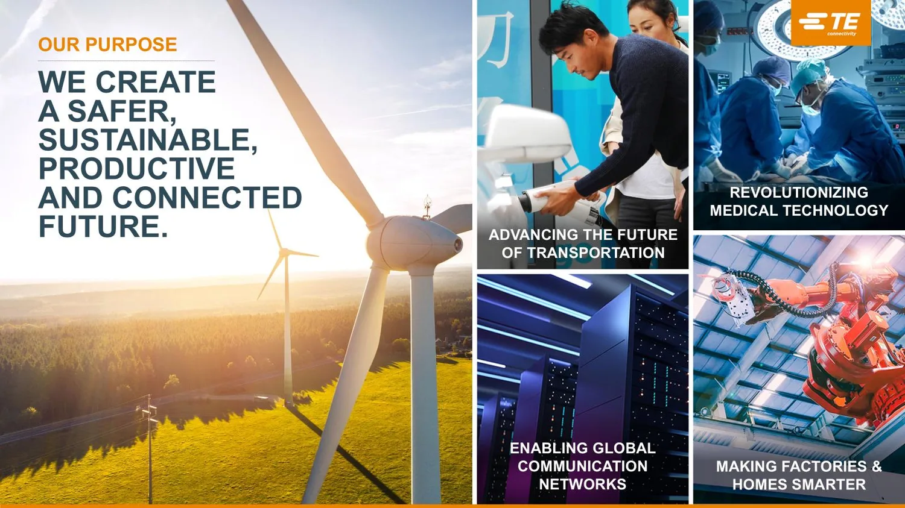
2.1.2. 기업 성장 역사
TE의 현재 모습은 1941년 설립된 AMP(Aircraft and Marine Products)에서 시작되었다. AMP는 설립 초기 항공 및 해상 장비용 전기 연결 부품 제조에 특화되었으나, 점차 제품 라인을 확장하며 전기 커넥터 분야의 선도 기업으로 성장했다. 1956년에는 뉴욕증권거래소에 상장되었으며, 이후 지속적인 혁신과 시장 확대 전략을통해 1960-70년대에 걸쳐 북미를 넘어 유럽과 아시아 시장으로 사업 영역을 확장했다.
1980년대와 1990년대에는 제조 기술 혁신과 제품 다각화를 통해 컴퓨터, 자동차, 통신 등 다양한 산업 분야로 고객 기반을 확대하며 커넥터 산업에서의 리더십을공고히 했다. 이 시기에 AMP는 독자적인 기술 개발과 생산 효율화를 통해 글로벌 경쟁에서 우위를 점하며 업계 선도 기업으로 자리매김했다. 특히 자동차 전장화와 컴퓨터 산업의 발전에 맞춰 고성능, 고신뢰성 커넥터 제품을 개발하며 시장점유율을 확대했다.
1999년에는 글로벌 산업재 기업인 Tyco International에 인수되어 Tyco Electronics로사업을 영위하게 되었다. 이 시기에 Tyco의 글로벌 네트워크와 자원을 활용하여
생산 규모를 확대하고 글로벌 고객 기반을 더욱 강화할 수 있었다. 특히 신흥 시장 진출과 글로벌 생산 체계 최적화를 통해 규모의 경제를 실현하고 원가 경쟁력을 강화했다.
2007년 Tyco International의 사업 분할 과정에서 Tyco Electronics는 독립 기업으로재출범하였고, 2011년에 현재의 TE Connectivity로 사명을 변경하였다. 이러한 사명변경은 단순한 커넥터 제조업체에서 다양한 연결 기술을 제공하는 종합 솔루션기업으로의 정체성 변화를 반영한 것이었다. 독립 기업으로 재출범한 이후 TE는자체 R&D 투자를 크게 확대하며 기술 혁신에 주력했고, 산업용 센서, 고속 데이터 커넥터, 자동차 전장 부품 등 고부가가치 제품 개발에 집중했다.
그림 2. TE Connectivity 주요 Timeline
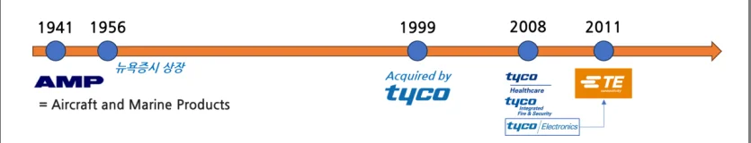
TE의 성장 과정에서 또 다른 중요한 전략은 전략적 인수합병(M&A)을 통한 사업확장과 기술 역량 강화였다. 2008년 항공우주 및 방위 산업에 특화된 Deutsch Group 인수를 통해 극한 환경용 고신뢰성 커넥터 기술을 확보했으며, 2010년 ADC Telecommunications 인수(약 12.5억 달러 규모)로 통신 인프라 분야를 강화했다. 2014년에는 Measurement Specialties를 약 15억 달러에 인수하여 센서 사업으로 영역을 확장했고, 2020년 독일 First Sensor 인수를 통해 자동차, 산업, 의료 분야의센서 기술 역량을 더욱 강화했다.
2010년대 이후 TE는 전기차, 자율주행차, 데이터센터, 스마트 팩토리 등 미래 성장 산업에 대한 전략적 투자를 확대하며 사업 구조를 혁신 성장 중심으로 재편해왔다. 특히 전기차용 고전압 커넥터, 자율주행용 센서, 5G 통신 인프라 등 첨단기술 분야에서의 리더십 확보에 주력했다. 이러한 전략적 방향성은 글로벌 메가트렌드에 선제적으로 대응함으로써 지속적인 성장 동력을 확보하기 위한 것이었
다.
이러한 다각적인 성장 전략을 통해 TE는 단순 커넥터 제조업체에서 종합 연결기술 솔루션 기업으로 진화했으며, 현재는 160억 달러 이상의 연간 매출과 약 89,000명의 임직원을 보유한 글로벌 기업으로 성장했다. 특히 범용 부품 산업이라는 치열한 경쟁 환경에서 50년 이상 글로벌 시장 1위 지위를 유지해온 점은 TE 의 차별화된 경쟁 전략과 지속적인 혁신 노력의 결과로 평가받고 있다.
2.2. 연구 질문
본 연구는 TE Connectivity의 사례 분석을 통해 소재·부품·장비 산업, 특히 범용 부품 산업에서의 지속가능한 경쟁우위 구축 방안을 탐구하고자 한다. 이를 위해 다
음과 같은 두 가지 핵심 연구 질문을 설정하였다: RQ.1 "TE Connectivity는 고도의 경쟁시장인 범용 부품 산업에서 지난 수십년간시장 선도 지위를 어떻게 유지할 수 있었는가?"
첫 번째 연구 질문은 TE Connectivity가 범용 부품 산업이라는 경쟁 강도가 높고기술 모방이 용이한 환경에서도 약 50년간 글로벌 시장 점유율 1위를 유지할 수있었던 요인을 탐구하는 데 초점을 맞추고 있다. 특히 범용 부품 산업의 특성상제품 차별화가 어렵고 가격 압력이 강한 상황에서, TE Connectivity가 어떻게 지속적인 경쟁우위를 구축하고 유지해왔는지를 분석하고자 한다.
RQ.2 "TE Connectivity의 성공사례가 제공하는 전략적 시사점은 무엇인가?" 두 번째 연구 질문은 TE Connectivity의 성공 사례 분석을 통해 도출된 전략적 시사점이 국내 소재·부품·장비 기업들, 특히 글로벌 시장에서의 경쟁력 강화를 모색하는 기업들에게 어떤 의미를 가지는지 탐구하는 데 중점을 둔다. 이는 단순한사례 분석을 넘어, 실질적인 전략적 함의와 적용 방안을 도출하는 것을 목적으로한다.
2.3. 연구 프로세스
본 연구는 주요 이론적 배경을 중심으로 한 분석 프레임워크를 활용하여 체계적인 연구 프로세스를 통해 진행된다.
우선 범용 부품(커넥터) 산업의 기술·시장·산업적 고찰을 통해 산업 특성과 경쟁구조를 파악한다. 범용 부품 산업은 모방이 용이하고 제품 차별화가 어려운 특성을 가지고 있어 지속가능한 경쟁우위를 구축하기 어려운 환경이다. 이러한 산업특성 하에서 글로벌 선도 기업들이 어떠한 전략으로 경쟁력을 확보하고 유지하는지를 분석하고, 특히 기술 개발, 시장 포지셔닝, 가치사슬 내 위치 선정 등 다양한 측면에서의 경쟁 구조를 고찰한다.
다음으로 본 연구의 이론적 배경으로 Teece(1986)의 전유성 체계(Appropriability Regime), Fujimoto(2007)의 아키텍처 기반 비교우위(Architecture-Based Comparative Advantage) 관점 등을 검토한다. 본 이론적 프레임워크는 범용 부품 산업에서 기업이 어떻게 혁신의 가치를 확보하고 지속가능한 경쟁우위를 구축할 수 있는지를이해하는 데 중요한 통찰을 제공한다. 특히 전유성 체계 개념은 기업이 특허, 표준화, 보완적 자산 등을 통해 어떻게 모방이 용이한 환경에서도 혁신의 가치를확보할 수 있는지에 대한 이론적 기반을 제공한다.
다음은 이론적 배경을 바탕으로, TE Connectivity의 리더십 구축 전략을 심층적으로분석한다. 특히 TE가 구축한 전유성 체계의 구성 요소들이 어떻게 상호 연결되어시너지를 창출하고, 이를 통해 장기적인 경쟁우위를 확보해왔는지를 탐구한다.
마지막으로, 분석 결과를 바탕으로 결론 및 시사점을 도출한다. 특히 TE Connectivity의 사례가 국내 소재·부품·장비 기업들에게 제공하는 전략적 함의를중점적으로 논의한다. 모방이 용이하고 제품 차별화가 어려운 범용 부품 산업에서 어떻게 효과적인 전유성 체계를 구축하고, 이를 통해 지속가능한 경쟁우위를확보할 수 있는지에 대한 구체적인 방안을 제시한다. 이는 단순한 벤치마킹을 넘어, 한국 기업들의 상황과 역량을 고려한 맞춤형 전략 방향을 제시하는 것을 목표로 한다.
그림 3. 연구 프로세스
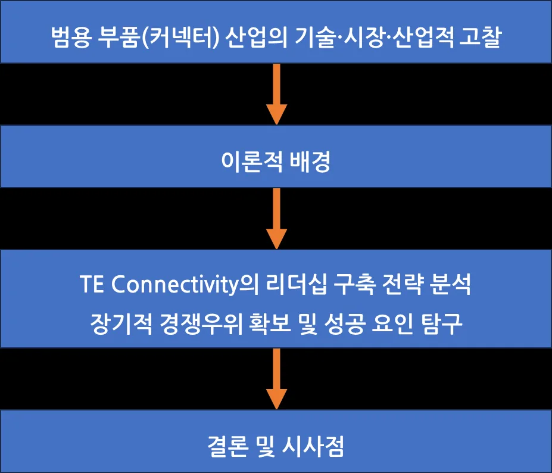
이러한 체계적인 연구 프로세스를 통해, 본 연구는 범용 부품 산업에서의 글로벌경쟁력 확보 방안에 대한 학술적, 실무적 통찰을 제공하고자 한다. 특히 전유성체계와 아키텍처 관점에서 TE Connectivity의 성공 요인을 분석함으로써, 국내 소재·부품·장비 기업들의 글로벌 경쟁력 강화를 위한 의미 있는 시사점을 도출할 수있을 것으로 기대된다.
제 3장. 주요 BM 분석
3.1. 커넥터(Connector)의 정의
커넥터는 전기전자 시스템 간 연결고리 역할을 하는 제조업 내 필수적인 전자기계적 요소이다. PC로 대변되는 모듈형(Modular) 아키텍처 혁신의 배경에 '커넥터'가있었다는 점은 현대 전자산업 발전에서 커넥터의 중요성을 단적으로 보여준다.
커넥터는 "전기적/기계적 연결을 제공하여 신호, 전력, 또는 데이터의 전송을 가능하게 하는 동시에, 필요에 따라 연결과 분리가 가능한 전자 부품"으로 정의할 수있다. 이러한 정의는 커넥터의 기능적 특성과 핵심 가치를 함축하고 있다. 커넥터의 근본적인 목표는 서로 다른 전자 장치 간에 안정하고 신뢰할 수 있는 연결을
통해 '손실'과 '왜곡' 없이 신호, 전력 또는 데이터 전송을 가능하게 하는 것이다. 커넥터는 도전체(터미널), 결속 및 보호체(커넥터 하우징)를 통칭하여 명명된다.
도전체는 전기적 연결을 담당하는 금속 부분으로, 주로 구리 합금이 사용되며, 신호 손실을 최소화하기 위해 금, 은, 주석 등으로 도금 처리된다. 결속 및 보호체는 도전체를 고정하고 외부 환경으로부터 보호하는 역할을 하며, 주로 엔지니어링 플라스틱으로 제작된다.
전자기기 연결 기술의 역사적 발전 과정에서 주목할 점은, 초기에 사용되던 충돌기술(납땜)에서 현대적 커넥터로의 패러다임 전환이다. 납땜은 전통적인 연결 방식으로, 도체를 직접 용접하거나 납으로 접합하는 방식이었다. 이 방식은 안정적인 연결을 제공하지만, 연결 후 분리가 어렵거나 불가능하다는 근본적인 한계를가지고 있었다. 이러한 납땜 방식은 현대적 의미의 커넥터(Dominant Design)가 출현하면서 점차 사양되었다.
커넥터(Dominant Design)는 필요에 따라 연결과 분리가 가능한 설계를 특징으로한다. 이는 모듈형 아키텍처를 가능하게 하는 핵심 요소로, 부품 교체, 업그레이드, 유지보수를 용이하게 한다. 이 유형의 커넥터는 일반적으로 수(male)와 암 (female) 구조의 짝을 이루며, 정확한 정렬과 안정적인 접촉을 보장하기 위한 정교한 설계가 필요하다. 이러한 커넥터는 접촉부(contact), 하우징(housing), 접촉 스프링(contact spring), 터미널 인터페이스 등의 구성 요소를 포함한다.
그림 4. 커넥터: 회로 연결 방식의 변천사
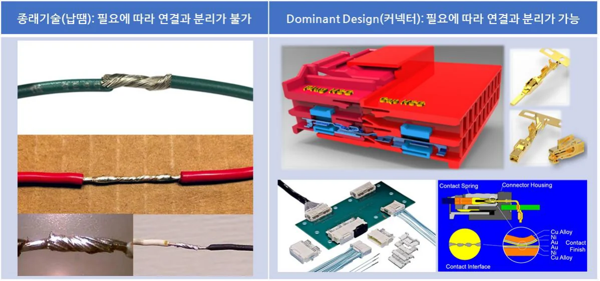
커넥터의 출현과 발전은 전자산업의 모듈화를 가능하게 한 핵심 혁신이었다. 모듈형 아키텍처는 복잡한 시스템을 독립적인 모듈로 분리하여, 각 모듈이 독립적으로 개발, 제조, 교체될 수 있도록 하는 설계 방식이다. 이러한 모듈형 아키텍처가 가능하기 위해서는 각 모듈 간의 인터페이스가 표준화되고 안정적이어야 하는데, 커넥터가 바로 이 인터페이스 역할을 담당한다. PC 산업의 성장과 표준화는커넥터의 발전과 밀접한 관련이 있으며, 커넥터는 PC 아키텍처의 모듈화를 가능하게 한 핵심 요소였다.
따라서 커넥터는 단순한 연결 부품을 넘어, 현대 전자산업의 모듈화, 표준화, 유연성을 가능하게 하는 핵심 요소로 이해할 수 있다. 특히 IT 기기, 자동차, 산업장비, 의료기기 등 다양한 분야에서 시스템의 복잡성이 증가하고 모듈화 요구가높아짐에 따라, 커넥터의 기술적 중요성과 산업적 가치는 더욱 증대되고 있다. 현대적 의미의 커넥터는 모듈형 아키텍처 혁신의 근간이 되었으며, 이는 전자산업의 패러다임을 근본적으로 변화시킨 중요한 기술적 진보라고 할 수 있다.
3.2 커넥터의 분류
커넥터는 다양한 기준에 따라 분류될 수 있으며, 이러한 분류 체계는 커넥터의기능적 특성과 적용 영역을 이해하는 데 중요한 틀을 제공한다. 본 연구에서는
커넥터를 크게 제품 특성에 따른 분류, 적용 방식에 따른 분류, 그리고 적용 분야에 따른 분류로 나누어 살펴보고자 한다.
3.2.1 제품 특성에 따른 분류
제품 특성에 따른 분류는 커넥터의 물리적 구성 요소와 그 특성에 초점을 맞춘것으로, 크게 도전체(터미널)와 결속 및 보호체(커넥터 하우징)로 구분할 수 있다.
도전체(터미널)
도전체는 전기적 연결을 담당하는 금속 부분으로, 주요 유형은 다음과 같다: Receptacle(Socket) Terminal: 암(female) 형태의 터미널로, 내부에 스프링 메커니즘을 포함하여 안정적인 접촉을 보장하며, 특히 고속 데이터 전송이나 고전류 응용 분야에서는 접촉 저항을 최소화하기 위한 정밀한 설계가 적용.
Tab(Pin) Terminal: 수(male) 형태의 터미널로, 굽힘이나 변형에 강한 합금으로 제작되며, 도금 처리로 산화와 부식을 방지하고 전기 전도성을 최적화하여 장기간 안정적인 연결을보장.
표 1. 터미널(도전체)의 분류
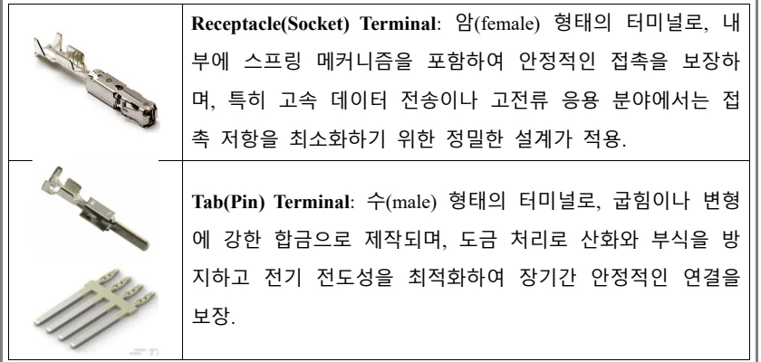
도전체 터미널은 접촉 안정성, 전류 용량, 삽입/분리 횟수, 내환경성 등의 특성에따라 다양한 설계와 소재가 적용된다. 특히 고전류, 고주파, 고속 데이터 전송 등특수 용도에 따라 터미널의 형상과 소재가 최적화된다.
결속 및 보호체(커넥터 하우징)
결속 및 보호체는 터미널을 고정하고 보호하는 역할을 하며, 주요 유형은 다음과같다:
Plug Connector: 케이블 측에 부착되는 이동형 커넥터로, 반복적인 연결/분리에도 안정적인 성능을 유지하기 위해 내마모성 소재와 정밀한 잠금 메커니즘이 적용되며, 최근에는 고밀도, 소형화 트렌드에 맞춰 소형화와 경량화가 진행.
Cap Connector: 종단 캡 형태의 커넥터로, 자동차, 옥외 설비, 산업 장비 등 환경에서 전자 시스템을 보호하는 역할.
Header Connector: 인쇄회로기판(PCB)에 직접 장착되는 고정형 커넥터로, 표면실장기술(SMT) 또는 관통구멍기술(THT)
방식으로 기판에 부착되며, 고온 환경에서의 신뢰성과 리플로우 솔더링 호환성이 중요한 설계 고려사항이다. 컴퓨터 메인보드, 전자제어장치 등에 활용.
표 2. 커넥터(결속 및 보호체)의 분류
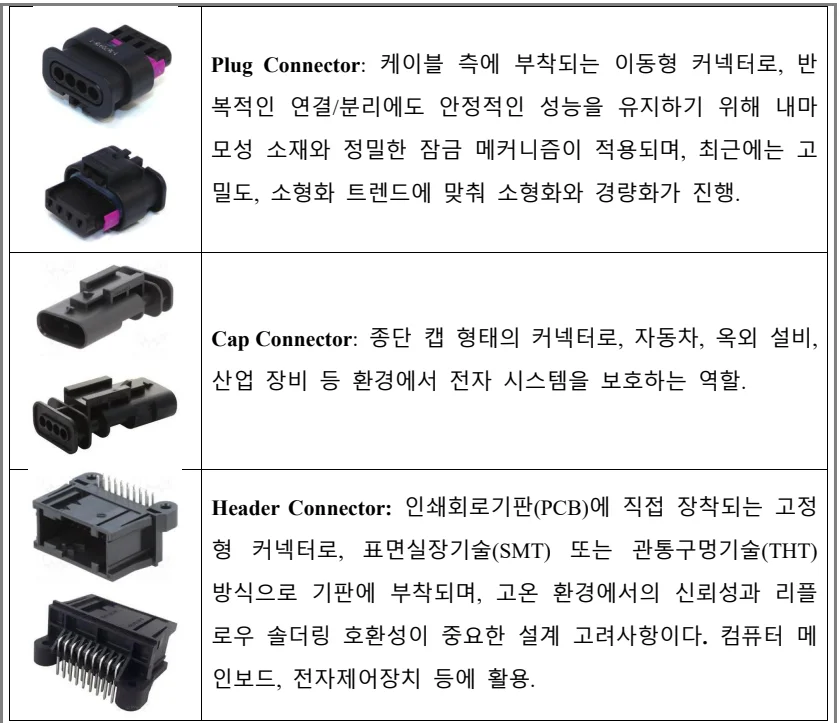
이러한 하우징은 기계적 보호, 방수/방진, 진동 흡수, 열 관리 등의 기능을 제공하며, 사용 환경과 목적에 따라 다양한 소재(주로 엔지니어링 플라스틱)와 설계가적용된다.
3.2.2 적용 방식에 따른 분류
적용 방식에 따른 분류는 커넥터가 실제로 어떤 방식으로 연결되는지에 초점을맞춘 것으로, 다음과 같은 주요 유형이 있다:
Wire to Wire: 케이블과 케이블을 직접 연결하는 방식으로, 전원, 신호, 데이터 라인의 유연한 연결을 가능하게 하며, 특히자동차 와이어링 하네스와 같이 복잡한 케이블 네트워크에서모듈형 설계와 유지보수 용이성을 제공.
Wire to Board: 케이블과 인쇄회로기판(PCB)을 연결하는 방식으로, 외부 전원, 센서, 디스플레이 등과 메인 PCB 간의 인터페이스를 구현하며, 최근에는 고속 데이터 전송을 위한 임피던스 정합과 EMI/RFI 차폐 기능이 강화되고 있음.
Board to Board: PCB와 PCB를 직접 연결하는 방식으로, 수직또는 병렬 스태킹 구조를 지원하여 전자기기의 3차원 공간활용을 최적화하며, 휴대폰, 웨어러블 기기 등 초소형 전자기기에서는 0.4mm 이하의 초미세 피치(pitch) 커넥터가 활용.
표 3. 커넥터 적용 방식의 분류
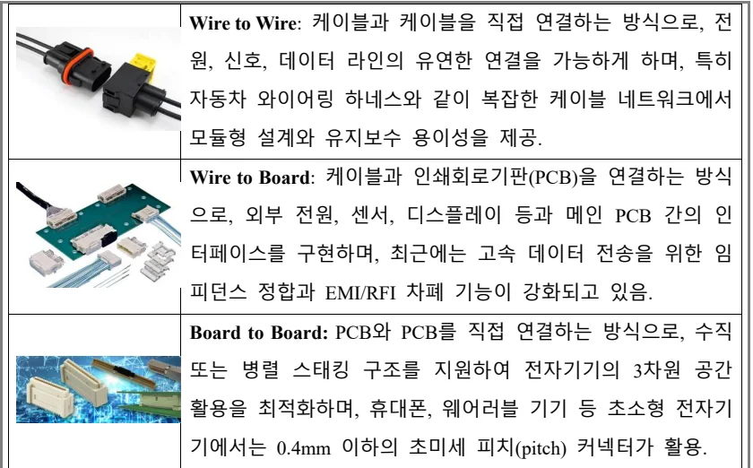
이러한 적용 방식은 커넥터의 물리적 구조와 전기적 특성에 직접적인 영향을 미치며, 특히 신호 무결성, 전력 전송 효율, 기계적 신뢰성 등의 측면에서 중요한설계 고려사항이 된다.
3.2.3 적용 분야에 따른 분류
커넥터는 사용되는 산업 및 애플리케이션 분야에 따라 다음과 같이 분류될 수 있다: 1. 컴퓨터 및 주변기기: PC, 서버, 스토리지 장치 등에 사용되는 커넥터로, 최근 USB4, Thunderbolt 4와 같은 통합 인터페이스의 등장으로 최대 40Gbps의 초고속 데이터 전송과 전력 공급을 동시에 지원하는 추세이다.
2. 사무기기: 복사기, 팩스, 프로젝터 등 사무용 전자기기에 사용되는 커넥터로,
장기간 안정적인 작동과 사용자 편의성을 고려한 설계가 적용되며, 멀티 기능
사무기기의 확산에 따라 다양한 주변기기 연결을 위한 표준화된 인터페이스가
중요해지고 있다.
3. 제조·시험·계측 장비: 산업 자동화 장비, 측정기, 테스트 장비 등에 사용되는
커넥터로, 극한 환경에서의 신뢰성, 정밀 측정을 위한 낮은 접촉 저항, 그리고
장시간 연속 작동에도 안정적인 성능을 유지하기 위한 내구성이 핵심 요구사
항이다.
4. 의료: 의료 장비, 임플란트, 진단 기기 등에 사용되는 커넥터로, 생체 적합성, 살균 처리 가능성, 전기적 안전성(IEC 60601 등 의료기기 안전 표준 충족)이
중요하며, 특히 생명 유지 장치에 사용되는 커넥터는 중복 설계와 같은 고신
뢰성 메커니즘이 적용된다.
5. 에너지·인프라: 발전 시스템, 스마트 그리드, 에너지 저장 장치 등에 사용되는
커넥터로, 고전압/고전류 처리 능력, 아크 방지 설계, 열 관리 기능이 중요하
며, 재생에너지의 확산에 따라 태양광, 풍력 발전 설비용 특수 커넥터의 수요
가 증가하고 있다.
6. 자동차: 자동차 전자 시스템, 파워트레인, ADAS(첨단 운전자 지원 시스템) 등에 사용되는 커넥터로, -40°C~125°C의 온도 범위, 습기, 진동, 화학물질 등 극한 환경에서의 작동 신뢰성과 자동차 안전 표준 충족이 필수적이다.
7. 운송(자동차 외 상용부문): 철도, 선박, 항공 등 상용 운송 수단에 사용되는 커넥터로, 장기간(때로는 수십 년) 안정적인 작동, 극한의 온도와 진동 환경에서
의 신뢰성, 그리고 관련 산업별 안전 인증(예: 항공우주 표준 DO-160)을 충족
해야 한다.
8. 군수: 군사 장비, 방위 시스템, 우주 탐사 장비 등에 사용되는 커넥터로, MIL- STD-810과 같은 군사 규격을 충족하는 극한 환경 내구성, EMI/RFI 차폐, 보안잠금 장치, 그리고 때로는 핵 방사선 저항성까지 요구되는 고도로 특화된 설
계가 적용된다.
9. 통신·데이터: 5G 인프라, 데이터센터, 네트워크 장비 등에 사용되는 커넥터로, 25Gbps 이상의 고속 데이터 전송, 정밀한 임피던스 제어, 누화(crosstalk) 최소화 설계가 중요하며, 데이터 트래픽 증가에 따른 고밀도, 저전력, 고효율 설계
가 강조되고 있다.
10. 가전: TV, 오디오 시스템, 스마트 가전 등에 사용되는 커넥터로, 소비자 편의성, 비용 효율성, 그리고 가정 환경에서의 안전성과 내구성이 중요하며, IoT 가전의
확산으로 무선 연결과 함께 작동하는 하이브리드 커넥터 솔루션의 수요도 증
가하고 있다.
11. 기타: 특수 환경이나 응용 분야에 맞춤화된 커넥터로, 예를 들어 해양 탐사용
수중 커넥터는 수천 미터 깊이의 고압 환경에서 작동하며, 농업용 커넥터는
비료와 농약에 대한 저항성을, 광산용 커넥터는 폭발 방지 설계를 갖추는 등
특수 목적에 최적화된 기능을 제공한다.
이러한 적용 분야에 따른 분류는 각 산업 영역에서 요구되는 특수한 기능과 성능특성을 반영하며, 이에 따라 커넥터의 설계, 소재, 제조 공정 등에 차별화가 이루어진다.
그림 5. 커넥터의 분류 및 제품-기능 관계도
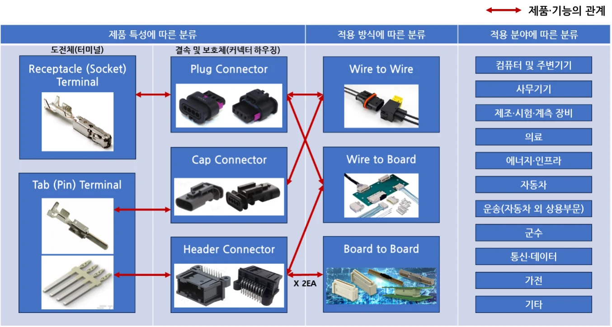
3.3 커넥터 시장 분석
커넥터 산업은 전자산업의 성장과 함께 지속적으로 발전해온 핵심 부품 시장으로, 특히 최근 디지털 전환과 전기화 트렌드에 따라 그 중요성이 더욱 부각되고있다. Bishop & Associates의 Connector Industry Yearbook에 따르면, 2023년 글로벌 커
넥터 시장 규모는 약 81.9억 달러(한화 약 115조원)에 달하며, 2024년부터 5년간약 6.7%의 연평균 성장률(CAGR)을 기록해 2029년에는 약 119.5억 달러(한화 약 160조원) 규모로 성장할 것으로 전망된다.[9][10][11]
글로벌 커넥터 시장에서 가장 큰 비중을 차지하는 통신/데이터 부문(23.2%)은 5G 네트워크 인프라 구축, 데이터센터 확장, 클라우드 컴퓨팅 서비스 증가에 힘입어빠르게 성장하고 있다. 특히 고속 데이터 전송을 위한 고성능 커넥터와 광통신커넥터의 수요가 급증하고 있으며, 향후 5년간 약 8.4%의 가장 높은 연평균 성장률을 보일 것으로 예상된다. 데이터 트래픽의 폭발적 증가와 디지털 전환 가속화는 이 부문의 지속적인 성장을 뒷받침할 것이다. [9][10][11]
자동차 부문(22.6%)은 차량의 전자화, 전기화, 자율주행 기술의 발전을 배경으로커넥터 시장에서 두 번째로 큰 비중을 차지하고 있다. 전기차 한 대당 사용되는커넥터의 수가 내연기관 차량 대비 최대 2배 이상 증가하는 추세이며, 고전압 시스템용 커넥터와 자율주행 시스템용 고속 데이터 커넥터의 수요가 특히 급증하고있다. 향후 5년간 약 7.4%의 높은 연평균 성장률이 예상되는 이 부문은 글로벌자동차 산업의 패러다임 전환과 함께 커넥터 시장의 핵심 성장 동력으로 자리매김할 전망이다. [9][10][11]
그림 6. 분야별 커넥터 시장 현황(2023년)[9]
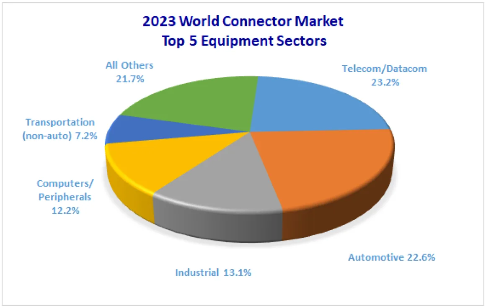
산업 장비 부문(13.1%)은 제조 자동화, 스마트 팩토리, 에너지 관리 시스템에 사용되는 커넥터 시장으로, 산업용 IoT(IIoT)의 확산과 제조업의 디지털 전환에 따라약 6.3%의 안정적인 연평균 성장률을 보일 것으로 예상된다. 특히 극한 환경에서작동하는 고신뢰성 산업용 커넥터와 실시간 데이터 모니터링을 위한 센서 연결커넥터의 수요가 증가하고 있다. [9][10][11]
이 외에도 군사/항공우주(6.5%), 컴퓨터 및 주변기기(5.2%), 의료 장비(4.6%) 등의부문이 각각의 산업 특성에 맞는 전문화된 커넥터 솔루션 수요 증가로 안정적인성장세를 보일 것으로 전망된다. 소비자 가전, 계측기기, 사무용 장비 등의 분야도 스마트홈, 웨어러블 기기, IoT 기술 확산에 힘입어 꾸준한 성장이 예상된다.
[9][10][11]
그림 7. 분야별 커넥터 시장 전망(~2029년)[9]
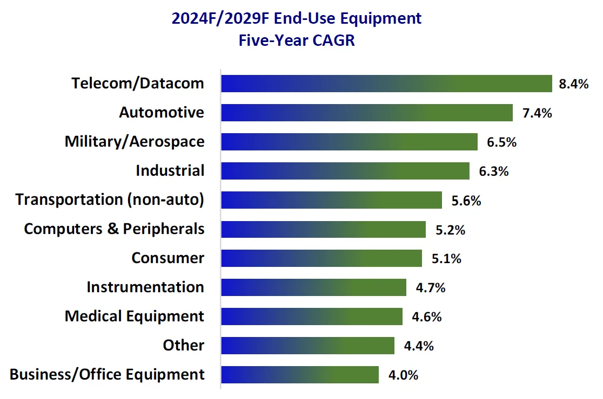
커넥터 시장의 성장은 자동차 산업의 전기화 및 자율주행화, 5G 네트워크 확산, 산업용 IoT 및 스마트 팩토리 확산, 데이터센터 확장 등 다양한 기술적, 산업적트렌드에 의해 견인되고 있으며, 특히 통신/데이터 부문과 자동차 부문이 향후 5
년간 시장 성장을 주도할 것으로 전망된다.
3.4 커넥터 기술 분석
커넥터 기술을 분석함에 있어 본 연구는 제품의 세부 기술적 특성보다는 산업 아키텍처와 기업 전략 관점에서의 분석에 초점을 맞추고자 한다. 특히 Terminal(단자), Plug/Cap 커넥터, Header 커넥터 등 주요 유형별 특성과 이들이 시장 경쟁 구조에 미치는 영향을 중심으로 살펴보고자 한다.
커넥터 산업의 핵심 기술적 특성은 제품의 모듈성(Modularity)과 통합성(Integrality) 의 균형이다. 커넥터는 서로 다른 시스템을 연결하는 인터페이스 역할을 수행하므로 모듈형 특성이 두드러지지만, 동시에 고객 시스템과의 긴밀한 통합이 요구되는 통합형 특성도 갖고 있다. 이러한 이중적 특성은 산업 구조와 기업의 경쟁전략에 중요한 시사점을 제공한다.
커넥터의 모듈러 특성은 내부적으로 모듈화된 제조 프로세스와 설계 표준을 갖추고 이를 통해 다양한 산업에 맞는 커넥터 제품을 효율적으로 개발할 수 있는 능력을 의미한다. TE Connectivity와 같은 글로벌 선도 기업이 50만 개 이상의 방대한제품 포트폴리오를 효율적으로 관리할 수 있는 것은 이러한 모듈형 접근 방식을성공적으로 구현했기 때문이다.
반면, 커넥터의 인테그럴 특성은 외부로부터 볼 수 없는 조직 역량 및 노하우를통해 혁신을 창출하며, 고객의 조율형 제품과 긴밀하게 통합되어야 함을 의미한다. 이러한 통합형 특성은 단순한 부품 공급자를 넘어 솔루션 제공자로서의 위치를 확립하는 데 중요한 역할을 한다. 특히 자동차, 항공우주, 의료 등 고신뢰성이요구되는 산업에서는 이러한 통합형 특성이 더욱 중요하다.
공정의 흐름 측면에서 살펴보면, 커넥터 제조 공정이 진행될수록 제품의 기능-구조 관계는 더욱 통합적(인테그럴)으로 변화하며, 제품의 생산성과 품질에 영향을주는 공정 파라미터들이 점차 복잡해진다. 특히 PCB용 Header 커넥터의 경우 커넥터 설계/제조 공정에서 블랙박스(Black box)영역이 다소 존재하고, 사용자(고객) 의 제조 공정에서 온도, 시간, 위치 조정 등의 솔더링 공정 파라미터들이 상호 복잡하게 연관되어 있어 높은 수준의 공정 통합성을 요구한다.
인테그럴 정도 분석에서 Terminal과 Header 커넥터는 다소 높음 수준으로, Plug/Cap 커넥터는 다소 낮음 수준으로 분류된다. 이는 Terminal과 Header 커넥터의 경우제조사별 차별화된 아키텍처 지식과 설계 노하우가 중요한 반면, Plug/Cap 커넥터는 상대적으로 표준화된 설계와 공정이 적용됨을 의미한다. 이러한 인테그럴 정도의 차이는 각 제품 영역에서의 시장 경쟁 구조와 진입 장벽에 직접적인 영향을미친다.
명칭 기능-구조 관계도 Terminal(단자)
Plug/Cap 커넥터
Header 커넥터
표 4. 커넥터의 기술-구조 관계도
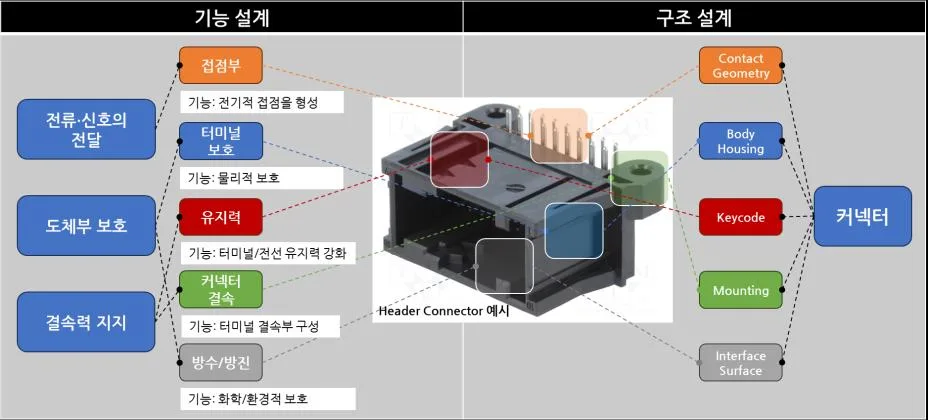
커넥터 제조사는 다양한 부품 공급뿐만 아니라 고객사의 서로 다른 공정 환경에서도 안정적 성능을 보장할 수 있는 신뢰성 높은 제품을 개발하고 공급하는 역량이 필수적이다. 이는 단순한 제품 설계를 넘어 고객의 사용 환경과 조건을 깊이이해하고, 이에 최적화된 솔루션을 제공할 수 있는 통합적 역량을 요구한다.
커넥터 기술 분석에서 중요한 것은 단순한 제품 구성 요소의 기술적 특성이 아니라, 모듈성과 통합성의 균형, 인테그럴 정도에 따른 경쟁 구조, 그리고 암묵적 지식과 공정 노하우의 역할이다. 이러한 특성들이 어떻게 전유성 체계(appropriability regime)를 구축하고 지속가능한 경쟁우위로 이어지는지가 TE Connectivity와 같은글로벌 선도 기업의 성공을 이해하는 핵심 요소라고 할 수 있다.
그림 8. 흐름별 커넥터 및 상위 주요 제조 공정
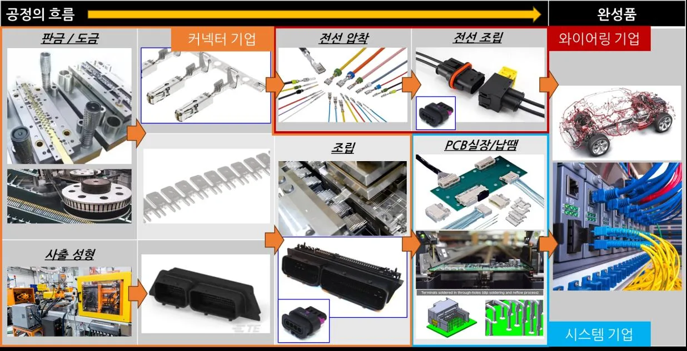
3.5 커넥터 산업 분석
커넥터 산업은 시장 구조, 경쟁 양상, 그리고 혁신 특성 측면에서 독특한 특징을보이는 산업이다. 본 장에서는 시장 집중도, 경쟁 구조, 그리고 산업 발전 단계에대한 이론적 분석을 통해 커넥터 산업의 특성을 체계적으로 이해하고자 한다.
3.5.1 시장 집중도 및 경쟁 구조
Bishop & Associates의 2023년 데이터에 따르면, 글로벌 커넥터 산업의 시장 점유율과 집중도는 상위 기업들의 강세가 두드러지는 특징을 보인다. 상위 5개 기업 (CR5)의 시장점유율은 41.95%에 달하며, HHI(Herfindahl-Hirschman Index) 지수는 457.61을 기록하고 있다. 상위 100개 기업(CR100)은 전체 시장의 76.3%를 차지하며, HHI 지수는 739.06에 이른다.
HHI는 시장집중도를 측정하는 지표로, 특정 산업에서 각 기업의 시장점유율을 제곱하여 합산한 값이다. 일반적으로 HHI가 1,500 미만이면 경쟁적 시장, 2,500 이상이면 집중된 시장으로 분류된다. 커넥터 산업의 HHI는 739.06으로, 이는 형식적으로는 경쟁적 시장 구조를 갖추고 있음을 시사한다.
그러나 중요한 것은 커넥터 산업이 단순한 HHI 수치로만 평가할 수 없는 '차별적경쟁시장'의 특성을 보인다는 점이다. 글로벌 커넥터 시장은 비탄력적 상태의 다
수 경쟁자가 존재하지만, 제품 차별화를 통해 시장 지배력과 수익성을 확보할 수있는 구조를 가지고 있으며, 이는 표면적으로는 다수의 경쟁자가 존재하지만 각기업이 차별화를 통해 제한적인 독점력을 행사할 수 있는 시장 구조를 의미한다.
TE Connectivity는 15.57%의 시장점유율로 업계 1위를 차지하고 있으며, 그 뒤를 Amphenol(11.84%), APTIV(5.76%), Molex(5.67%), Foxconn(FIT)(3.11%) 등이 따르고있다. 이러한 시장 구조는 기업들이 규모의 경제를 달성하면서도 제품 및 기술차별화를 통해 경쟁우위를 확보하는 전략을 채택하게 만드는 요인으로 작용한다.
그림 9. 커넥터 산업의 Porter's 5 Force 분석
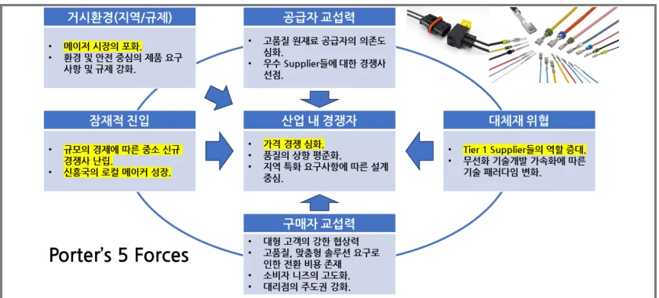
커넥터 산업의 경쟁 구조는 다양한 특징을 보인다. 자동차, 통신, 산업 등 성숙단계에 접어든 주요 시장에서는 경쟁이 심화되고 있으며, 규모의 경제가 작용하는 틈새시장이나 지역 시장에서는 다수의 중소 경쟁사들이 난립하는 양상이다.
특히 중국, 인도 등 신흥 시장에서는 낮은 생산 비용과 지역 시장에 대한 이해를바탕으로 로컬 기업들의 경쟁력이 빠르게 강화되고 있다. 또한 자동차, 통신 등핵심 산업에서는 Tier 1 공급업체들의 영향력이 확대되면서 가치 사슬 내 역학관계가 변화하고 있다. 더불어 표준화된 범용 커넥터 시장에서는 제품 차별화가 어렵고 기술 모방이 용이해 가격 경쟁이 더욱 심화되는 추세이다. 이러한 복합적인경쟁 환경은 글로벌 커넥터 기업들이 단순한 가격 경쟁을 넘어 기술 혁신, 제품차별화, 고객 관계 관리, 글로벌 네트워크 구축 등 다차원적인 경쟁 전략을 수립하게 만드는 요인으로 작용한다.
3.5.2 산업 발전 단계 분석
커넥터 산업의 발전 단계를 분석하기 위해 Utterback과 Abernathy(1975)의 '동태적혁신 모델(Dynamic Model of Process and Product Innovation)'과 Pavitt(1984)의 '기술 변화의 부문별 패턴(Sectoral Patterns of Technical Change)' 분류 체계를 적용해 볼 수있다.
Utterback-Abernathy 모델에 따른 분석커넥터 산업의 발전 단계를 체계적으로 이해하기 위해 산업 혁신 이론을 적용하여 분석할 수 있다. Utterback과 Abernathy(1975)의 '동태적 혁신 모델'에 따르면, 커넥터 산업은 현재 'Stage III - Cost-minimizing/Systematic 단계'에 해당한다고 볼 수있다. 이 단계에서는 핵심 설계와 구조가 표준화되고 주요 제품 카테고리가 확립되면서 제품의 다양성이 감소하는 경향을 보인다. 또한 산업 표준과 규격이 정착되어 호환성이 중요해지고, 경쟁의 기반이 기술적 차별화에서 비용 효율성으로이동하며, 가격 경쟁 심화로 인한 마진 감소 현상이 나타난다.[12] 규모의 경제를달성할 수 있는 대형 기업 중심으로 시장이 재편되는 과점화 현상이 발생하고, 제조 효율성, 자동화, 공급망 최적화 등 생산 공정 혁신과 규모의 경제가 경쟁력의 핵심 요소로 부상한다. 이러한 특성은 커넥터 산업이 제품 혁신보다 공정 혁신과 비용 최적화에 초점을 맞추는 성숙기에 접어들었음을 시사한다. 그림에서볼 수 있듯이, 현재 커넥터 산업은 '솔더리스 전기 연결을 위한 빠른 탈착식 와이어 연결'이라는 지배적 디자인이 확립된 후, 공정 혁신이 제품 혁신을 추월하는체계적 프로세스 단계에 위치해 있다. 그러나 이러한 일반적 특성에도 불구하고, 전기차, 5G, 데이터센터 등 신규 성장 분야에서는 여전히 활발한 제품 혁신이 이루어지고 있다는 점이 주목할 만하다.
그림 10. Utterback-Abernathy 모델에 따른 커넥터 산업 분석[12]
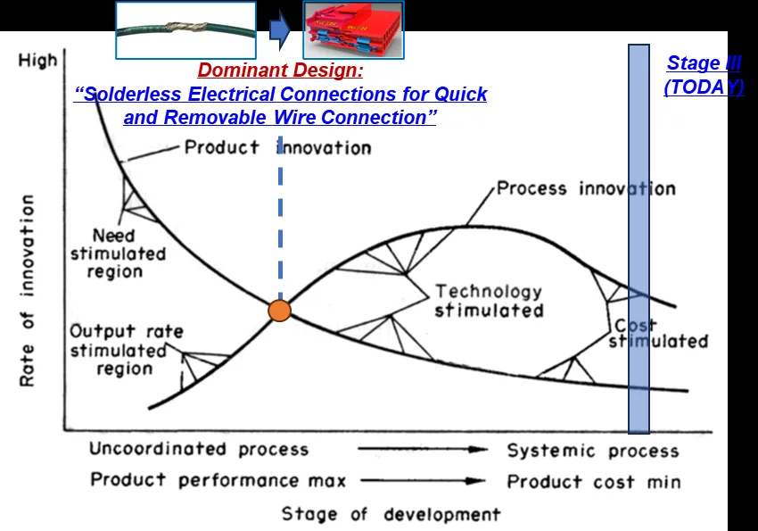
Pavitt의 분류 체계에 따른 분석 Pavitt(1984)의 '기술 변화의 부문별 패턴' 분류 체계에 따르면, 커넥터 산업은 '생산 집약형(Production Intensive)' 산업으로 분류할 수 있다. 생산 집약형 산업은 기술 궤적이 비용 절감과 제품 디자인에 초점을 맞추며, 전유성 체계가 비공식적인공정 노하우와 R&D에 있음을 보여준다. 이 유형에서는 점진적 제품 개선과 제조효율성 향상이 핵심 혁신 방향으로 나타나며, 특허보다는 공정 노하우, 암묵적 지식, 학습 곡선 효과 등 보이지 않는 공정 기밀이 중요한 전유 메커니즘으로 작용한다. 공식적인 R&D 외에도 제조 엔지니어링, 품질 관리, 생산 최적화 등의 노하우가 중요한 경쟁력 요소로 작용하며, 기술적 격차(technical lags)와 동적 학습 (dynamic learning)이 혁신의 주요 특성으로 나타난다. 이러한 특성은 커넥터 산업에서 공정 혁신과 제조 역량이 중요한 경쟁 요소임을 시사하며, TE Connectivity와같은 글로벌 선도 기업들은 제조 효율성, 품질 관리, 공급망 최적화 등의 영역에서 차별화된 역량을 구축함으로써 경쟁우위를 확보하고 있다.
표 5. Pavitt의 분류 체계에 따른 커넥터 산업 분석[13]
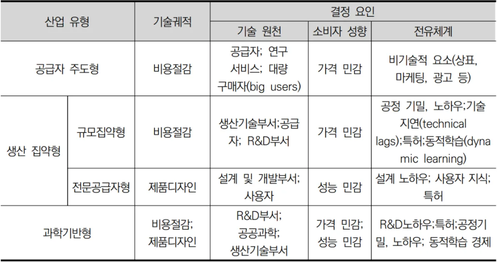
4. 이론적 배경
본 연구에서 TE Connectivity의 성공 요인을 특허, 표준, 포지셔닝 세 가지 요소에집중하여 분석한 것은 범용 부품 산업의 구조적 특성과 기업의 혁신 가치 확보메커니즘에 대한 이론적 이해에 기반한다.
범용 부품 산업은 기술 모방이 용이하고 제품 차별화가 어려운 구조적 특성을 갖는다. Baldwin과 Clark(2000)은 모듈형 아키텍처에서 개별 부품의 표준화가 진행될수록 부품 간 호환성은 증가하지만 개별 부품 제조사의 차별화 기회는 감소한다
고 지적했다. 커넥터 산업은 이러한 모듈형 아키텍처의 전형적인 사례로, 제품 자체의 기술적 복잡성이 상대적으로 낮아 단순한 기술적 우위만으로는 지속가능한경쟁우위를 확보하기 어렵다.
이러한 산업 환경에서 Teece(1986)의 전유성 체계(Appropriability Regime) 이론이제시하는 세 가지 핵심 메커니즘; ①강한 전유성 체계 구축을 통한 법적 보호(특허), ②지배적 디자인 점유를 통한 시장 표준 주도(표준), ③보완적 자산 확보를통한 상업화 역량 강화(포지셔닝)이 특히 중요하게 작용한다. 커넥터는 다양한 시스템 간 인터페이스 역할을 수행하므로 호환성과 표준화가 시장 성공의 핵심 요인으로 작용하며(Gawer & Cusumano, 2002), 개별 기술보다는 시스템 전체와의 연결
성에서 가치가 창출되는 특성을 갖는다.
선정된 세 요소는 객관적 분석이 가능한 공개 데이터를 통해 검증할 수 있다는방법론적 장점을 갖는다. 특허는 Derwent Innovation 데이터베이스를 통한 정량 분석이, 표준화는 표준화 기구 공개 자료를 통한 사례 분석이, 포지셔닝은 Bishop & Associates 산업 데이터를 통한 시장 분석이 각각 가능하다. Grindley와 Teece(1997) 는 기술집약 산업에서 특허-표준-시장포지션의 상호작용이 기업 성과에 미치는 영향을 실증적으로 입증했으며, 이는 본 연구의 분석 프레임워크에 이론적 토대를제공한다.
본 연구는 Teece의 전유성 체계 이론과 Fujimoto(2007)의 아키텍처 기반 비교우위이론을 통합하여 범용 부품 산업에 특화된 분석 모델을 구성한다. 이 통합 모델에서 특허, 표준, 포지셔닝은 독립적인 요소가 아닌 상호 보완적이고 순환적인 관계를 형성한다.
Teece의 전유성 체계 이론에서 제시하는 혁신 가치 확보 메커니즘은 Fujimoto의아키텍처 관점에서 볼 때 케이퍼빌리티(Capability)와 포지셔닝(Positioning)의 동적상호작용으로 해석할 수 있다. 특허는 기업의 기술적 케이퍼빌리티를 법적으로보호하고 강화하는 수단이며, 표준은 산업 아키텍처 내에서 유리한 포지션을 선점하는 전략적 도구이고, 시장 포지셔닝은 케이퍼빌리티를 수익성으로 전환하는연결 고리 역할을 한다.
특히 범용 부품 산업에서는 제품 아키텍처가 모듈형과 통합형의 특성을 동시에갖는다. 커넥터는 표준화된 인터페이스를 통해 다양한 시스템과 연결되는 모듈형특성을 가지면서도, 특정 애플리케이션에서는 고객의 시스템과 긴밀하게 통합되는 통합형 특성을 보인다. 이러한 이중적 특성으로 인해 기업은 표준화를 통한규모 확대와 차별화를 통한 프리미엄 확보라는 두 가지 전략을 동시에 추구해야하며, 이는 특허-표준-포지셔닝의 통합적 접근을 더욱 중요하게 만든다.
4.1 전유성 체계(Appropriability Regime)
기업이 혁신으로부터 가치를 확보하는 능력을 결정하는 핵심 요소로 Teece(1986) 는 "Profiting from technological innovation"에서 전유성 체계의 개념을 제시했다. 전유성 체계는 기업이 혁신의 가치를 확보하고 경쟁자의 모방으로부터 보호할 수있는 법적, 구조적 조건을 의미하며, 강한 전유성 체계 환경에서는 혁신 기업이그 혁신으로부터 발생하는 가치의 대부분을 확보할 수 있는 반면, 약한 전유성체계 환경에서는 모방과 가치 유출이 용이하게 일어날 수 있다. Teece는 특히 ICT 산업의 경우 전유성이 핵심 요소이지만 대부분의 경우 전유성 체제가 약하다는점을 강조했는데, 이는 커넥터와 같은 범용 부품 산업에도 유사하게 적용될 수있다.[14]
Teece의 이론에 따르면 혁신으로부터 가치를 확보하기 위한 핵심 전략은 세 가지요소의 조합을 통해 실현된다. 첫번째는 강한 전유성 체계 구축으로, 특허, 영업비밀, 저작권, 상표권 등의 지식재산권과 함께 산업 표준 참여를 통해 혁신의 법적 보호를 강화하는 것이다. 그러나 범용 부품 산업처럼 전유성 체제가 상대적으로 약한 환경에서는 단순한 특허 보호만으로는 충분하지 않으며, 다른 전략적 요소들과의 결합이 필수적이다. 두번째는 지배적 디자인 점유 전략으로, 산업 내에서 표준으로 자리 잡는 제품 아키텍처나 기술 솔루션을 선점하고 통제함으로써시장 지배력을 확보하는 것이다. 지배적 디자인을 확립한 기업은 규모의 경제, 학습 효과, 네트워크 외부성 등을 통해 후발 주자들이 쉽게 극복하기 어려운 진입장벽을 구축할 수 있으며, 이는 커넥터 산업에서 특히 중요한 의미를 가진다.[14]
세번째이자 가장 중요한 요소는 보완적 자산 획득 전략이다. Teece는 보완적 자산을 혁신 기술의 하위 단계에 위치하는 것으로, 혁신, 제조, 마케팅, 사후 서비스등을 포함하는 자산으로 정의했다. 특히 약한 전유성 체계 환경에서는 이러한 보완적 자산이 혁신 가치 확보의 핵심 요소로 작용하며, 혁신 기업이 모방자들로부터 경쟁우위를 지키는 결정적 수단이 된다. 커넥터와 같은 범용 부품의 경우 제품 자체의 기술적 복잡성이 상대적으로 낮고 모방이 용이할 수 있지만, 고객별맞춤형 설계 능력, 글로벌 제조 네트워크, 품질 관리 시스템, 기술 지원 서비스, 공급망 관리 등의 보완적 자산은 쉽게 모방하기 어려운 경쟁우위의 원천이 될 수있다.[14]
그림 11. Teece, D.J.(1986)의 전유성 이론: ICT산업의 전략적 혁신 경영(김의석)참조[14]
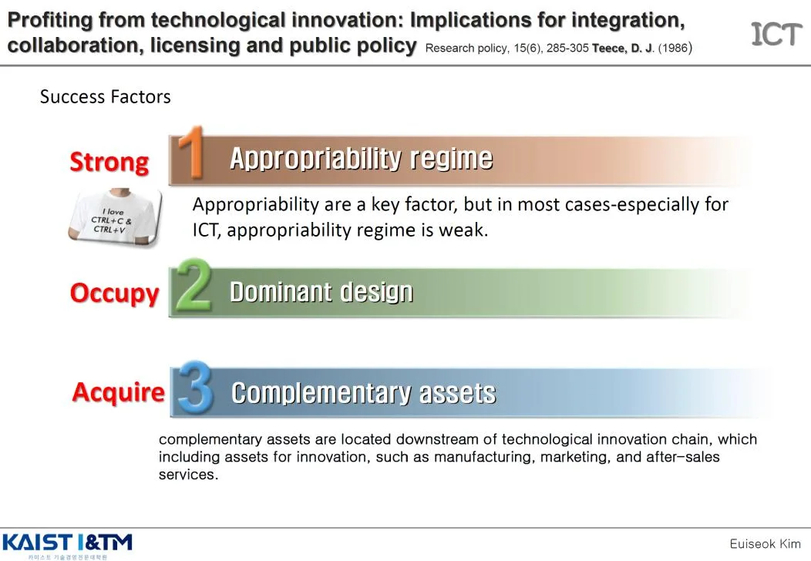
Teece의 이론은 TE Connectivity와 같이 범용 부품 산업에서 지속적인 시장 리더십을 유지하는 기업의 성공 요인을 분석하는 데 특히 유용한 프레임워크를 제공한다. 범용 부품은 그 특성상 모방이 상대적으로 용이하고 특허 보호가 제한적일수 있으므로, 단순한 기술적 우위보다는 지배적 디자인의 점유와 광범위한 보완적 자산의 구축이 경쟁우위 확보에 특히 중요한 역할을 한다. 이러한 관점에서 TE Connectivity의 성공 사례는 약한 전유성 체계 환경에서도 체계적인 전략을 통해 혁신의 가치를 효과적으로 확보하고 유지할 수 있음을 보여주는 중요한 사례로 판단된다.
4.2 아키텍처 기반 비교우위(Comparative Advantage)와 포지셔닝(Positioning)
Fujimoto(2007)는 "Architecture-Based Comparative Advantage"에서 기업의 경쟁우위가단순한 기술 혁신이나 자원 보유를 넘어 조직 역량과 제품 아키텍처 간의 동적적합성에서 비롯된다고 주장했다.[15] 그가 제시한 핵심 명제는 조직역량과 제품
아키텍처 간의 동적 적합성이 설계비용 우위의 핵심이라는 것으로, 이는 TE Connectivity와 같은 범용 부품 기업의 지속가능한 경쟁우위를 분석하는 데 중요한이론적 틀을 제공한다. Fujimoto 이론의 핵심은 기업이 보유한 내부 역량과 제품의구조적 특성 간의 상호작용에 주목하며, 기업은 자신의 조직적 특성과 축적된 역량에 가장 적합한 제품 아키텍처를 선택하고 발전시킬 때 지속가능한 경쟁우위를확보할 수 있다고 본다.
Fujimoto의 이론에 따르면, 제품 아키텍처는 통합적과 모듈형, 그리고 폐쇄적과 개방적이라는 두 축으로 구분된다. 폐쇄-통합형에는 소형차와 오토바이 같은 제품이포함되며, 폐쇄-모듈형에는 메인프레임 컴퓨터와 공작기계, 개방-모듈형에는 개인용 컴퓨터와 인터넷 등이 해당한다.[15] 커넥터 산업은 범용 부품의 특성상 기본적으로 모듈형 아키텍처를 가지면서도, 고객별 맞춤형 솔루션 제공을 통해 통합적 특성을 동시에 보유하는 독특한 위치에 있다. 이러한 특성은 TE Connectivity가표준화된 범용 제품을 생산하면서도 각 산업별, 고객별 특수 요구사항에 맞는 차별화된 솔루션을 제공할 수 있는 핵심 배경이 된다.
포지셔닝 전략 측면에서 일반적으로 독일과 일본 기업들은 케이퍼빌리티 중심의전략을 선호하는 반면, 미국 기업들은 포지셔닝 중심의 접근법을 취하는 경향이있다. 그러나 TE Connectivity는 미국 기업임에도 불구하고 케이퍼빌리티와 포지셔닝을 균형있게 결합한 독특한 전략을 구사한다. 이는 커넥터 산업의 특성상 기술적 역량과 시장 포지셔닝이 모두 중요하기 때문이며, 대부분의 표준 커넥터가 범용 부품 산업으로 분류되어 모듈화의 정도가 크고 가격 경쟁이 치열한 시장에서뛰어난 케이퍼빌리티를 기반으로 한 포지셔닝 전략이 경쟁력과 수익성을 동시에확보하는 핵심 요소가 되고 있다.
그림 12. Fujimoto(2007)의 아키텍처 이론: Capability, Competitiveness, and Profitability[15]
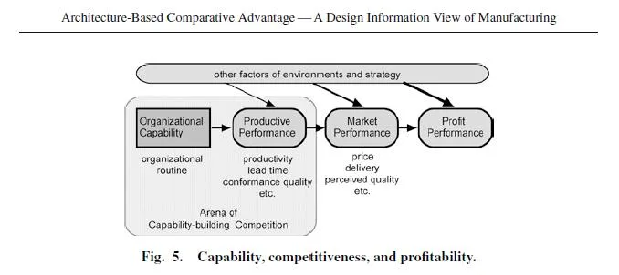
Fujimoto 이론의 가장 중요한 통찰은 역량 구축과 시장 포지셔닝이 정태적 관계가아니라 시간에 따라 상호 영향을 미치며 공진화하는 동태적 관계라는 점이다. 그가 제시한 모델에 따르면, 조직 역량이 생산성과로 이어지고, 이것이 다시 시장성과를 창출하며, 최종적으로 이익성과로 연결되는 연쇄적 관계가 형성된다. TE Connectivity는 이러한 동태적 공진화 메커니즘을 통해 조직 루틴의 개선이 리드타임 단축, 품질 개선, 적합성 증대 등의 생산성과를 창출하고, 이는 가격 경쟁력, 납기 신뢰성, 고객이 인지하는 품질 향상 등의 시장성과로 전환되며, 최종적으로수익성 개선과 시장 지위 강화라는 결과를 가져오는 선순환 구조를 구축하고 있다.[15]
커넥터와 같은 범용 부품 산업은 제품 차별화가 상대적으로 어렵고, 기술적 모방이 용이하며, 다양한 최종 사용자 산업에 공급해야 하고, 규모의 경제와 범위의경제가 모두 중요한 특성을 보인다. 이러한 산업 환경에서 Fujimoto의 이론적 프레임워크는 TE Connectivity가 어떻게 조직 역량을 체계적으로 구축하고, 이를 효과적인 시장 포지셔닝과 연계하여 지속가능한 경쟁우위를 확보했는지를 분석하는데 유용한 관점을 제공한다. TE Connectivity의 사례는 범용 부품 산업에서도 단순한 비용 경쟁을 넘어선 차별화된 경쟁우위 구축이 가능함을 보여주는 중요한 실증 사례로서, 국내 소재·부품·장비 기업들이 글로벌 시장에서 경쟁력을 확보하기
위한 실질적인 전략적 시사점을 제공할 수 있다.
5. 사례 분석 및 결과
5.1 특허(Patent)
특허는 기업의 혁신 성과를 보호하고 경쟁우위를 구축하는 핵심 메커니즘으로, 다수의 연구에서 특허와 기업의 혁신성과 및 시장 성과 간의 긍정적 상관관계가확인되었다. Teece(1986)는 특허와 보완적 자산의 결합이 혁신으로부터의 수익 창출을 결정한다고 주장했으며, Hall 등(2005)은 높은 인용도의 특허가 기업 시장가치와 강한 정의 상관관계를 보인다고 밝혔다. 이러한 이론적 배경 속에서 TE Connectivity는 특허 전략을 통한 혁신 보호와 가치 창출의 모범적 사례를 보여주고 있다.[14]
TE Connectivity는 2025년 Clarivate의 'Top 100 Global Innovators'에 12년 연속 선정되며 지속적인 혁신 역량을 인정받았다. 회사의 혁신 여정은 1940년대 AMP(Aircraft and Marine Products)라는 이름으로 시작되었으며, 전기 커넥터 분야에서 다수의 획기적인 특허를 개발했다. 1940-50년대에 출원된 전기 커넥터 절연 페룰, 전기 커넥터, 전기 연결 형성 방법 등의 특허는 커넥터 기술의 기초가 되었고, TE가 산업표준을 정의하고 지배적 디자인을 확립하는 데 중요한 역할을 했다.[16]
그림 13. Clarivate - Top 100 Global Innovator 2025 [16]
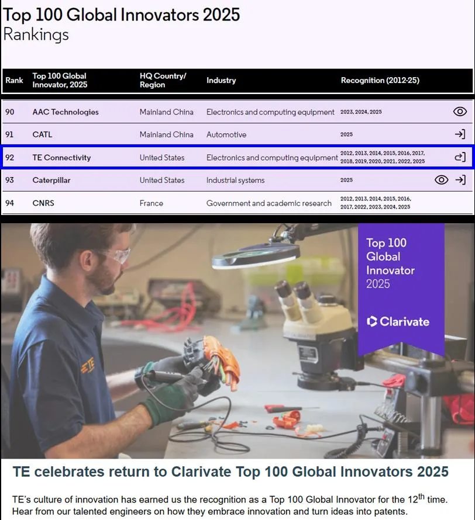
TE는 제품 혁신뿐만 아니라 제조 공정 혁신에도 상당한 투자를 진행했다. O-형압착, F-형 압착 단자 관련 특허와 수동 압착에서 자동 압착으로 발전하는 공정기술 특허들은 TE가 제품과 공정 양면에서 혁신을 추구했음을 보여준다. 1950년대 AMP Leadmaker부터 2020년대 첨단 와이어 프로세싱 장비까지, TE는 제조 공정혁신을 통해 생산성 향상과 품질 개선을 지속적으로 달성해왔다.[17]
그림 14. The Trace of TE’s Historical Dominant Design [17]
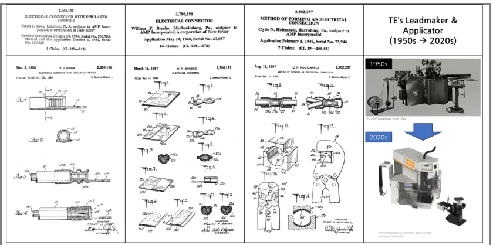
TE Connectivity의 특허 전략은 단순한 법적 보호 수단을 넘어 전략적 자산으로서의 특허 활용에 초점을 맞추고 있다. 회사는 특허 포트폴리오를 통해 핵심 기술보호, 표준 형성에 대한 영향력 행사, 경쟁사와의 기술 제휴 및 라이센싱을 통한수익 창출까지 아우르는 종합적인 특허 전략을 구사하고 있다.
특히 TE의 특허 전략이 갖는 차별적 특성은 단순한 특허 수량이 아닌 '혁신의 독창성'에 있다. TE의 핵심 특허들은 높은 인용도와 기술적 영향력을 가지며, 이는 ' 선도자'로서 산업의 기술적 방향을 정의해왔음을 보여준다. 이러한 혁신적 특허들은 후속 기술 개발의 기반이 되어 지속적인 혁신 생태계를 구축하는 데 기여했고, 이 과정에서 TE는 단순 부품 공급자에서 종합 연결 솔루션 제공자로 진화하며 시장 리더십을 공고히 했다.
TE Connectivity는 방대한 특허 포트폴리오를 통해 기술 라이센싱 수익을 창출하는동시에, 타 기업과의 크로스 라이센싱으로 기술 접근성을 확대하고 협력적 혁신을 추구하는 개방형 접근법을 취하고 있다. 이러한 전략은 TE가 급변하는 기술환경에 유연하게 대응하면서도 핵심 기술에 대한 통제력을 유지할 수 있게 하는핵심 요소로 작용하고 있다.
특허 검색 및 분석 기준 TE Connectivity의 특허 전략을 심층적으로 분석하기 위해 본 연구에서는 체계적인특허 검색 및 분석 방법론을 적용하였다. 특허 분석에 있어 출원 일자와 등록 일자는 각각 다른 의미와 가치를 지닌다. 출원 일자는 기업이 특허청에 특허를 신청한 시점으로, 기업의 R&D 활동 타이밍과 혁신 방향성을 파악하는 데 유용하다.
반면, 등록 일자는 특허청의 심사를 거쳐 특허권이 실제로 부여된 시점으로, 법적으로 유효한 권리의 시작점이자 실질적인 기술 보호가 가능한 시점을 의미한다.
본 연구에서는 "검증된 기술력 분석 가능", "실제 권리화된 기술 범위 파악", "기술적 가치가 입증된 특허 중심 분석", "노이즈(거절된 출원) 제거 효과" 등의 장점을고려하여 등록 일자 기준의 분석 방식을 채택하였다. 이를 통해 TE Connectivity의실질적인 기술력과 법적 보호가 가능한 기술 자산을 더욱 정확하게 평가할 수 있었다.
분석을 위한 데이터 수집 및 처리는 Derwent Innovation 특허 데이터베이스를 활용하였으며, 2024년까지 등록된 전체 특허를 대상으로 DWPI Family 기준을 적용하여중복을 방지하고 Top Optimized Assignee 기준으로 최종 권리자를 추적하였다. 특히 TE Connectivity와 주요 경쟁사인 Amphenol, Molex의 특허를 비교 분석하기 위해 Bishop & Associates의 Connector Industry Yearbook 자료를 참고하여 각 기업의 인수합병(M&A) 이력을 기반으로 특허 검색식을 구성하였다.
TE Connectivity PA=((TE CONNECTIVITY) OR (TYCO ELECTRONICS) OR (AMP INC) OR ("M/A COM" OR "M A COM" OR MACOM) OR ("MICRO MODULE SYSTEMS") OR ("SMART FLEX") OR (POWERFLOR) OR ("ACCU SCAN") OR ("ELF ATOCHEM") OR ("SMART AMERICAN HOME") OR (ADFLEX) OR (INTELLON) OR ("OCEAN POWER TECHNOLOG*") OR ("GEORGE CABLE") OR (ATMEL) OR (LANART) OR ("NEW MEDIA CORP*") OR (ACTATEL) OR ("MADISON CABLE") OR ("HTS ELECTROTECHNIK") OR (CABLESA) OR (EMCORE) OR (ELCON) OR ("LOROM INDUSTRIAL") OR (RAYCHEM) OR ("AFC CABLE") OR ("SIEMENS EC") OR ("THOMAS & BETTS" OR "THOMAS AND BETTS") OR ("FIBER CORE") OR ("UNI STAR INDUSTRIES") OR (CRITCHLEY) OR ("QUAD SYSTEMS") OR (NANONICS) OR ("CIIT HOLDINGS") OR (PRONER) OR (PRETEMA) OR (COBHAM) OR (ADC TELECOMMUNICATIONS) OR (DEUTSCH GROUP) OR ("MEASUREMENT SPECIALTIES") OR (SEACON) OR ("XIAMEN DELIXING" OR SIBAS) OR ("AMERICAN SENSOR") OR (CREGANNA) OR (JAQUET) OR (ENTRELEC) OR ("ALPHA TECHNICS") OR (KISSLING) OR ("SILICON MICROSTRUCTURES") OR ("FIRST SENSOR") OR ("DRI RELAYS") OR ("ERNI GROUP") OR ("LAIRD CONNECTIVITY") OR (KEMTRON) OR ("LINX TECHNOLOG*") OR (KRIES) OR ("SCHAFFER HOLDING"))
Amphenol PA=((AMPHENOL) OR ("ILC DATA DEVICE") OR ("SINE COMPANIES") OR ("KAI JACK INDUSTRIAL") OR ("ADVANCED CIRCUIT TECHNOLOGY") OR ("T&M ANTENNAS") OR ("KOREAN AIR ELECTRONICS") OR ("CONFEKTION E") OR ("U- JIN CABLE") OR ("AIR L B") OR (TERADYNE) OR ("RADSOK BUSINESS") OR (PCD INDUSTRIAL) OR ("FIBER SYSTEMS INTERNATIONAL") OR ("SV MICROWAVE") OR (PARLEX) OR ("ALDEN PRODUCTS") OR ("JAYBEAM WIRELESS") OR ("XIAN CONNECTOR") OR ("TIMES MICROWAVE") OR ("LTW TECHNOLOGY") OR ("BORISCH MANUFACTURING") OR (ADRONICS OR ELROB) OR ("CEMM THOME") OR ("FEP FAHRZEUGELEKTRIK") OR ("NELSON DUNN") OR ("TEL-AD ELECTRONICS") OR ("HOLLAND ELECTRONICS") OR ("GRIFFITH ENTERPRISES") OR ("DC ELECTRONICS") OR ("IONIX AEROSPACE") OR (TECYOX) OR ("HANGZHOU JET") OR ("GE ADVANCED SENSORS") OR (CASCO AUTOMOTIVE) OR (INVOTEC) OR (FCI) OR (MARTEC) OR ("CUSTOM CABLE") OR (AUXEL FTG) OR ("FRIEDRICH GOHRINGER") OR (PHITEK) OR ("CTI HOLDINGS") OR ("ALL SENSORS") OR ("ARDENT CONCEPTS") OR ("SSI CONTROL") OR ("AORORA TECHNOLOGY") OR ("CHARLES INDUSTRIES") OR (CONEC) OR (KOPEK) OR ("BERND RICHTER") OR (GJM) OR ("CONTROL MEASURES REGULATION") OR (ONANON) OR (POSITRONIC) OR ("MTS SYSTEMS") OR ("NPI SOLUTIONS") OR ("CONNOR MANUFACTURING") OR ("Q MICROWAVE") OR ("XMA CORPORATION") OR ("EBY ELECTRO") OR (PCTEL))
Molex PA=((MOLEX) OR ("MOD TAP" OR "MOD-TAP") OR (TENSOLITE) OR ("BETA PHASE") OR ("CIE DEUTSCH") OR ("VECTOR MODULAR") OR ("MOLEX MAFATLAL") OR ("SILENT SYSTEMS") OR (CARDELL) OR ("BEAU INTERCONNECT") OR ("SCHOTT OPTOVANCE") OR ("CONNECTEURS CINCH") OR ("STRATEGIS TECHNOLOG*") OR ("INCEP TECHNOLOG*") OR ("CENTURY CIRCUITS") OR (WOODHEAD) OR ("POLYMICRO TECHNOLOG*") OR (AFLEXTECH) OR ("FUCHIGAMI MICRO") OR ("HCS KABLOLAMA") OR (LUXTERA) OR ("TEMP-FLEX CABLE" OR "TEMP FLEX CABLE") OR ("AFFINITY MEDICAL") OR ("FCT ELECTRONICS") OR (FLAMAR CAVI) OR (WESTEC) OR ("KOCH INDUSTRIES") OR (NUCURRENT) OR ("PROTEK MEDICAL") OR ("SDP TELECOM") OR (SOLIGIE) OR ("INTERCONNECT SYSTEMS") OR ("PHILLIPS MIDSIZE") OR (BITTWARE) OR ("LAIRD CONNECTED VEHICLE*") OR ("FIBERGUIDE INDUSTR*") OR (KEYSSA))
표 6. 대상 기업별 특허 검색식(Derwent Innovation)
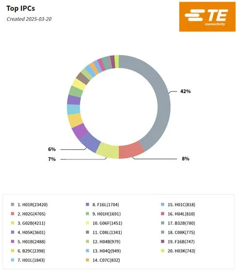
특허 분석 결과 TE Connectivity의 특허 포트폴리오를 주요 경쟁사와 비교 분석한 결과, TE는 양적· 질적 측면 모두에서 압도적인 기술적 우위를 점하고 있다. 특허 등록 현황 분석에 따르면, TE Connectivity는 총 159,152건의 개별 특허 기록(Individual Records)과 55,587건의 DWPI Families(등록 일자 기준으로 중복을 방지한 특허 패밀리)를 보유하고 있어, Amphenol(36,671건/13,039건)과 Molex(32,964건/11,548건)에 비해 4배 이상의 규모를 나타내고 있다.
특히 커넥터 산업의 기술적 핵심 영역인 IPC Code 'H01R'(도전접속; 복수의 다중- 절연된 전기접속부의 구조적 결합; 결합장치; 집전장치) 분야에서 TE Connectivity 는 23,420건의 특허를 보유하고 있어, Amphenol(6,155건)과 Molex(7,347건)를 크게앞서고 있다. 3개 기업 모두 H01R 분야에 높은 기술 집중도를 보이고 있으나, TE 가 절대적인 수치 면에서 3배 이상의 특허를 보유함으로써 커넥터 기술의 핵심영역에서 압도적인 기술적 리더십을 확보하고 있음을 명확히 보여준다.
표 7. 대상 기업별 특허 등록 현황
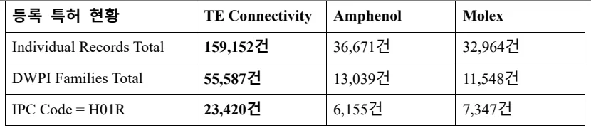
TOP 20 IPC 분류 현황을 살펴보면, TE Connectivity의 기술 다각화 수준도 주목할만하다. 차트에서 볼 수 있듯이, TE의 경우 상위 20개 기술 분류가 전체 특허의약 42%를 차지하는 반면, Amphenol은 약 50%, Molex는 약 60%를 차지하고 있다. 이는 TE가 핵심 기술 영역에 대한 집중도를 유지하면서도, 다양한 기술 영역에걸친 균형 잡힌 특허 포트폴리오를 구축하고 있음을 보여준다.
이러한 특허 분석 결과는 TE Connectivity가 커넥터 산업에서 기술적 리더십을 확보하고 지속가능한 경쟁우위를 구축했음을 실증적으로 보여준다. 핵심 기술 영역에서의 압도적인 특허 포트폴리오는 경쟁사의 진입을 억제하고, 기술 로드맵을주도할 수 있는 기반을 제공한다. 특히 TE는 특허 포트폴리오의 가치 평가 면에서도 실제 권리화된 기술 범위 파악, 특허 포트폴리오 가치 평가, 권리 행사 가능성 검토 등에서 우수한 성과를 보이고 있다.
TOP 20 IPC 분류 현황 (TE Connectivity)
IPC 분류 상세 H01R (23,420) - 전기적 연결; 전기 도체의 구조적 연결장치 (TE H02G (4,705) - 전선, 케이블 또는 전선의 설치 Connectivity)
G02B (4,211) - 광학 요소, 시스템, 또는 장치 H05K (3,601) - 인쇄회로; 전기장치의 캐비닛 또는 구조적 세부사항 H01B (2,488) - 케이블; 도체; 절연체; 도전성 재료의 선택 B29C (2,398) - 플라스틱의 성형 또는 접합 H01L (1,843) - 반도체 장치; 전기적 고체 장치 F16L (1,704) - 파이프; 파이프 조인트; 파이프 지지 H01H (1,691) - 전기 스위치; 계전기; 셀렉터; 비상 보호 장치 G06F (1,451) - 전기 디지털 데이터 처리
C08L (1,341) - 고분자 화합물의 조성물 H04B (979) - 전송 H04Q (949) - 선택(스위치, 계전기, 셀렉터)
C07C (832) - 비환식 화합물 또는 탄소환식 화합물 H01C (818) - 저항기 H04L (810) - 디지털 정보의 전송 B32B (780) - 적층 제품 C08K (775) - 무기 또는 비고분자 유기물질을 첨가제로서 사용한 조성물 F16B (747) - 부품간의 고정 또는 결합을 위한 장치 H03K (743) - 펄스 기술 TOP 20 IPC 분류 현황 (Amphenol)
IPC 분류 상세 H01R (6,155) - 전기적 연결; 전기 도체의 구조적 연결장치 (Amphenol) H05K (932) - 인쇄회로; 전기장치의 캐비닛 또는 구조적 세부사항 G01R (757) - 전기량의 측정; 자기량의 측정 H01Q (654) - 안테나 G02B (652) - 광학 요소, 시스템, 또는 장치 G06F (439) - 전기 디지털 데이터 처리 H04M (399) - 전화 통신 H04B (335) - 전송 F16C (292) - 샤프트; 가요성 샤프트; 크랭크와 같은 기계 요소; 회전 부분 G06K (280) - 데이터 인식; 데이터 표현; 기록 매체; 기록 매체취급 H04L (200) - 디지털 정보의 전송 H02G (197) - 전선, 케이블 또는 전선의 설치 E21D (169) - 갱도나 터널의 샤프트; 갱도나 터널의 라이닝 G01N (166) - 재료의 화학적 또는 물리적 성질의 측정에 의한재료 조사 또는 분석 H01L (166) - 반도체 장치; 전기적 고체 장치 H01B (154) - 케이블; 도체; 절연체; 도전성 재료의 선택 G01M (135) - 정적 또는 동적 균형을 위한 기계 또는 구조물의테스트 B29C (122) - 플라스틱의 성형 또는 접합 G01B (113) - 길이, 두께 또는 유사한 직선 치수의 측정 B23K (110) - 납땜 또는 비납땜; 용접; 납땜 또는 용접에 의한클래딩 또는 도금 TOP 20 IPC 분류 현황 (Molex)
IPC 분류 상세 H01R (7,347) - 전기적 연결; 전기 도체의 구조적 연결장치 (Molex) H05K (1,076) - 인쇄 회로; 전기장치의 케이스 또는 구조적 세부사항 G02B (636) - 광학 요소, 시스템, 또는 장치 H04B (477) - 전송 G06K (370) - 데이터 인식; 데이터 표현; 레코드 캐리어; 레코드캐리어 취급 H02J (300) - 전력 공급 또는 전력 분배를 위한 회로 장치 또는시스템; 전기 에너지 저장 시스템 H01L (286) - 반도체 장치; 다른 곳에 속하지 않는 전기 고체장치
G06F (225) - 전기적 디지털 데이터 처리 H01Q (198) - 안테나 H01B (167) - 케이블; 도체; 절연체; 특성에 따른 도전, 절연 또는 유전체 재료의 선택 F16F (163) - 스프링; 충격 흡수기; 진동 감쇠 수단 H01P (140) - 도파관; 도파관 공진기 H01H (134) - 전기 스위치; 계전기; 선택기; 비상 보호 장치 H01F (127) - 자석; 인덕턴스; 변압기; 자기 특성에 따른 재료의선택 G01R (115) - 전기 변량의 측정; 자기 변량의 측정 F21V (109) - 광원이나 조명장치의 기능적 특징 또는 세부; 다
른 분류에 속하지 않는 조명장치의 구조적 조합 H04L (91) - 디지털 정보의 전송 H01M (86) - 화학적 에너지를 전기적 에너지로 직접 변환하기위한 방법이나 수단 H02G (84) - 전선, 케이블, 또는 송전선의 설치; 전기선, 케이블또는 송전선 조합 G02F (78) - 광학적 특성의 조절을 위한 장치 또는 배열
표 8. 대상 기업별 Top 20 IPC 분류 현황
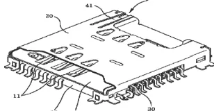
특허 인용 현황 측면에서도 TE Connectivity는 우수한 성과를 보이고 있다. 제시된데이터에 따르면, TE는 총 40,611회의 피인용 수를 기록하여 Amphenol(11,187회)과 Molex(10,687회)에 비해 약 3.5배 이상의 인용을 받았다. 특히 커넥터 산업의 기술적 핵심 영역인 'IPC=H01R' 및 인터그레이션 정도가 높은 전기적 접속 구조, PCB Type 등의 영역에서 두드러진 피인용 수를 보이고 있다. TE의 H01R 분야 특허는 24,752회의 피인용을 기록하여 Amphenol(5,894회)의 4배, Molex(7,554회)의 3배 이상의 인용을 받았다.
특허 피인용 수는 해당 기술의 영향력과 가치를 나타내는 중요한 지표로, TE의 특허가 산업 전반에 미치는 영향력이 경쟁사보다 월등히 높음을 시사한다. 이는 TE 가 커넥터 산업의 기술 발전 방향을 선도하고, 후속 혁신의 기반을 제공하는 핵심 기술을 보유하고 있음을 의미한다.
특허 피인용 현황 TE Connectivity Amphenol Molex
총 피인용 수 40,611회 11,187회 10,687회
표 9. 대상 기업별 특허 피인용 현황
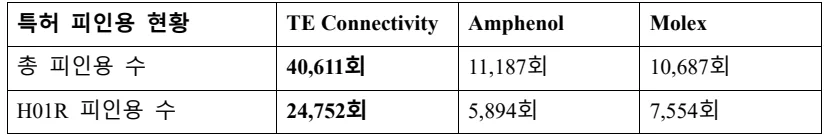
TE Connectivity의 주요 특허를 살펴보면, 2025년 3월 기준 'Mounting socket for memory card and SIM card having integrated sensing switch'(622회 인용), 'Impedance matched backplane connector'(455회 인용), 'Contact assembly for an electrical connector'(424회 인용), 'Matable coaxial connector assembly having impedance compensation'(409회 인용) 등이 높은 인용을 받으며 업계 표준 기술로 자리 잡았다. 이러한 핵심 특허들은 메모리 카드 소켓, 임피던스 매칭 백플레인 커넥터, 전기 커넥터용 접점 어셈블리, 임피던스 보상 가능 동축 커넥터 등 전기적 접속 구조와 PCB 타입 등의 핵심 기술 영역을 포괄하고 있다.
기본 구조 등록 번호 특허 명 (피인용 수)
Mounting socket for memory card and US7896671B2 SIM card having integrated sensing switch (622회) (메모리 카드 및 SIM 카드용 마운팅소켓)
US5066236A Impedance matched backplane connector (455회) (임피던스 매칭된 백플레인 커넥터)
Contact assembly for an electrical US8465332B2 connector (424회)
(전기 커넥터용 접점 어셈블리 구조)
Matable coaxial connector assembly US5217391A having impedance compensation (임피던 (409회) 스 보상 기능이 있는 결합형 동축 커넥터 어셈블리)
표 10. TE Connectivity 피인용 상위 특허 예시
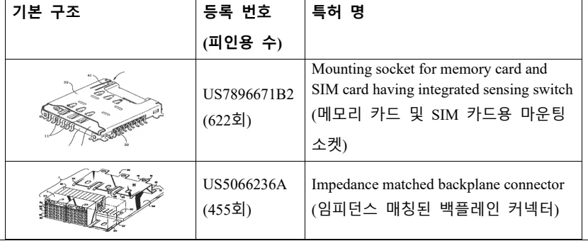
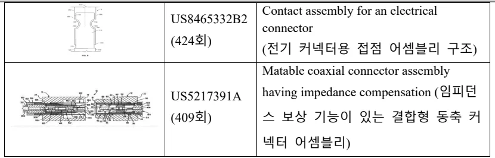
주목할 만한 점은 TE Connectivity가 단순히 특허의 양적 측면에서만 우위를 점하는 것이 아니라, 인용도가 높은 영향력 있는 특허를 다수 보유함으로써 질적으로도 우수한 특허 포트폴리오를 구축하고 있다는 것이다. 이는 TE가 주요 경쟁사대비 양적/질적으로 매우 우수한 특허 포트폴리오를 형성하여 기술 혁신 역량을검증받았으며, 전유성 체계 구축 및 커넥터 산업 표준에 상당한 영향력을 미칠수 있음을 시사한다.
이러한 피인용 분석 결과는 TE가 기술 혁신을 통해 산업 표준을 선도하고, 전유성 체계를 강화하는 데 성공했음을 실증적으로 보여준다. 특히 높은 인용도를 가진 핵심 특허들은 TE가 커넥터 산업의 기술적 방향을 정의하고, 후속 혁신의 토대를 마련하는 데 중추적인 역할을 했음을 입증한다. 이는 TE Connectivity의 지속가능한 경쟁우위가 단순한 양적 성장이 아닌, 질적으로 우수하고 영향력 있는 기술 혁신에 기반하고 있음을 명확히 보여주며, 다음으로 살펴볼 표준(Standard) 전략과 긴밀하게 연계되어 있다.
5.2 표준(Standard): 지배적 디자인 확립
TE Connectivity의 두 번째 핵심 성공 요인은 산업 표준의 적극적 형성과 지배적디자인 구축을 통한 시장 리더십 확보이다. 표준화는 이해관계자들의 합의를 통해 제품, 서비스, 프로세스의 일관된 규격과 기준을 수립함으로써 호환성, 품질, 안전성을 확보하고 산업의 효율성과 혁신을 촉진하는 체계적인 활동으로, 오픈영역이 넓어지는 것을 의미한다.
표준화의 전략적 의미와 접근 방식커넥터 산업에서 표준은 기업의 경쟁력과 시장 지배력을 결정짓는 핵심 요소로작용한다. 특히 커넥터가 다양한 시스템과 장치를 연결하는 인터페이스 역할을한다는 점에서, 표준화는 제품의 확산과 생태계 구축에 결정적인 영향을 미친다.
커넥터 표준의 영역은 크게 Closed(비 표준화) 영역과 Open(표준화) 영역으로 구분할 수 있다.[18]
Closed 영역은 기업이 자체적으로 개발한 독자적인 기술과 설계를 적용하여 차별화된 경쟁력을 확보하는 영역이다. 이 영역에서는 기업 고유의 지식재산과 노하우가 중요한 경쟁 요소로 작용하며, 진입 장벽을 형성하는 역할을 한다. 반면, Open 영역은 법용으로 채택된 일부 인터페이스의 경우로, 산업 표준으로 채택되어 다양한 제조사의 제품 간 호환성을 보장하는 영역이다.[18]
그림 15. 아키텍처의 기본 타입: 저서 모노즈쿠리(Fujimoto저, 박정규역, 2006)[18]
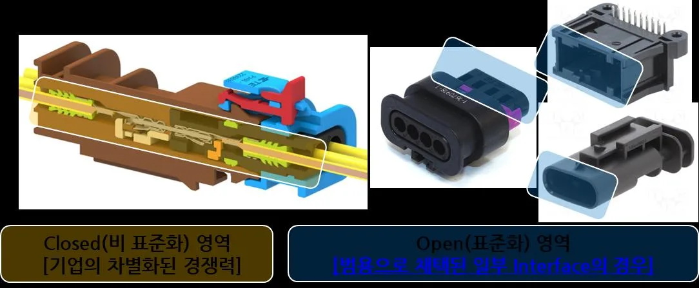
그림 16. 커넥터의 표준과 Open & Closed 영역
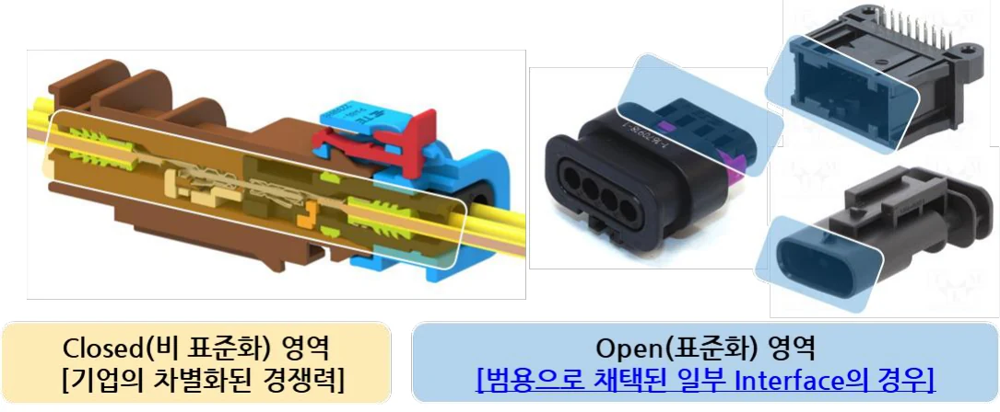
TE Connectivity는 이러한 Closed와 Open 영역의 균형을 전략적으로 관리하면서, 산업 표준 형성에 적극적으로 참여하여 시장을 주도해왔다. 특히 주목할 만한 점은 TE가 단순히 표준을 따르는 Follower가 아닌, 표준을 주도하는 Leader로서 산업 생태계 전반에 영향력을 행사해왔다는 것이다.
그림 17. USCAR(United State Council for Automotive Research): 표준 커넥터 Interface 예시
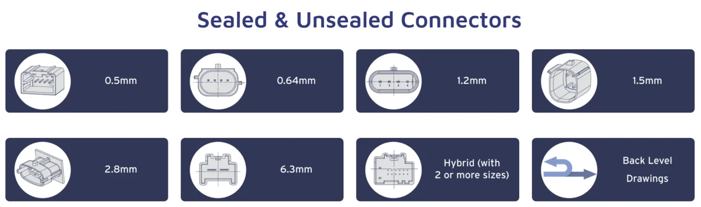
[19]
그림 18. LV214(독일 자동차 커넥터 표준) 및 TE 표준화 제품(MCON1.2 Plug & Cap, MCP2.8
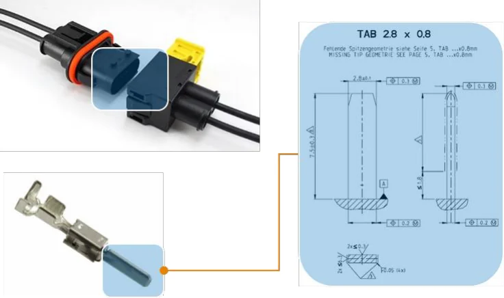
Tab Terminal)예시산업별 표준화 활동과 TE Connectivity의 영향력 TE Connectivity는 다양한 산업 분야에서의 표준화 활동을 통해 글로벌 커넥터 시장의 리더십을 강화하고 있다. TE는 주요 표준화 기구 활동에 적극 참여하며, 각분야별 특성에 맞는 표준화 방식(de facto, Consensus, de jure)을 전략적으로 활용하여 시장 리더십을 구축하고 있다.
표 11. 분야별 주요 커넥터 표준 및 TE Connectivity의 표준 커넥터 예시[20][21]
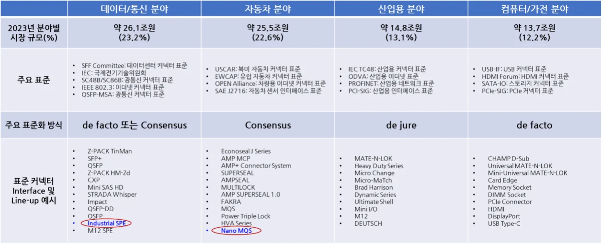
TE Connectivity는 각 산업별 특성 및 표준화 특성에 맞게 표준 선점을 위한 특허등 기술 혁신 역량을 기반으로 지속적인 노력과 투자를 기울이고 있다. 특히 주
목할 만한 점은 TE가 단순히 표준을 따르는 수동적 접근이 아닌, 표준을 주도하고 형성하는 적극적인 역할을 수행하고 있다는 것이다. 본 사례연구에서는 TE의표준화 전략과 성과를 이해하기 위해 두 가지 표준 선점 사례를 예시로 살펴보고자 한다.
표준 선점 예시(1): ‘de facto(사실상)’ 표준 선점첫 번째는 'de facto(사실상) 표준'의 사례로, SPE(Single Pair Ethernet) 통신 커넥터 표준화에서의 TE의 활동이다. SPE는 기존 이더넷 기술(4쌍/8핀)을 단일 쌍(2핀)으로간소화하여 산업 자동화, 빌딩 자동화, 자동차 네트워크 등 다양한 분야에 이더넷기술을 확산시키는 혁신적인 기술이다. TE는 제품 혁신 및 초속한 기술 사업화 역량을 통해 이 차세대 통신 네트워크 연결 표준을 선점했다. 특히 산업 자동화 분야의 SPE 기술 표준화에 있어 PROFIBUS Nutzerorganisation(PNO)과 협력하여 PROFINET over SPE를 위한 통일된 커넥터 시스템 개발에 핵심적인 역할을 담당했다. TE는 SPE 기술의 장점인 단일 쌍 구조(1쌍의 꼬인 전선만 사용), IEEE 802.3cg 기반 10Base-T1 표준, 최대 1Gb/s 속도 지원, 100m까지 신호 전송 가능 등의 특성과 케이블/커넥터 크기 60% 감소, 무게 감소를 통한 경량화 실현, 설계/공간/설치 간소화, 향상된 전자기적 성능 제공 등의 이점을 통해 시장에서 기술적우위를 확보했다.[22]
Ethernet 4-pair (8핀 구조) SPE 1-pair (2핀 구조)
그림 19. SPE(Single Pair Ethernet) 통신 Connector 신규 'de facto' 표준 사례[22]
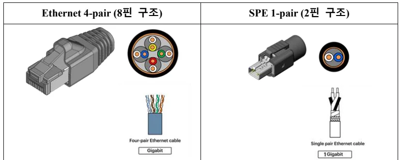
그림 20. TE Connectivity의 SPE(Single Pair Ethernet) 통신 Connector 예시
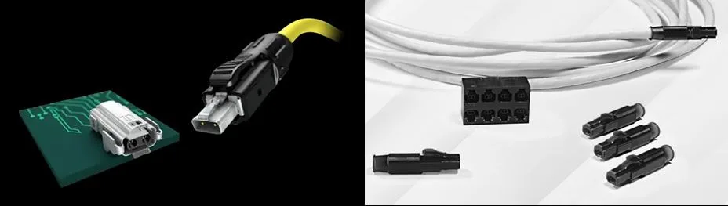
그림 21. TE Connectivity의 SPE(Single Pair Ethernet) 통신 Connector 표준 선점의 사례 [22]
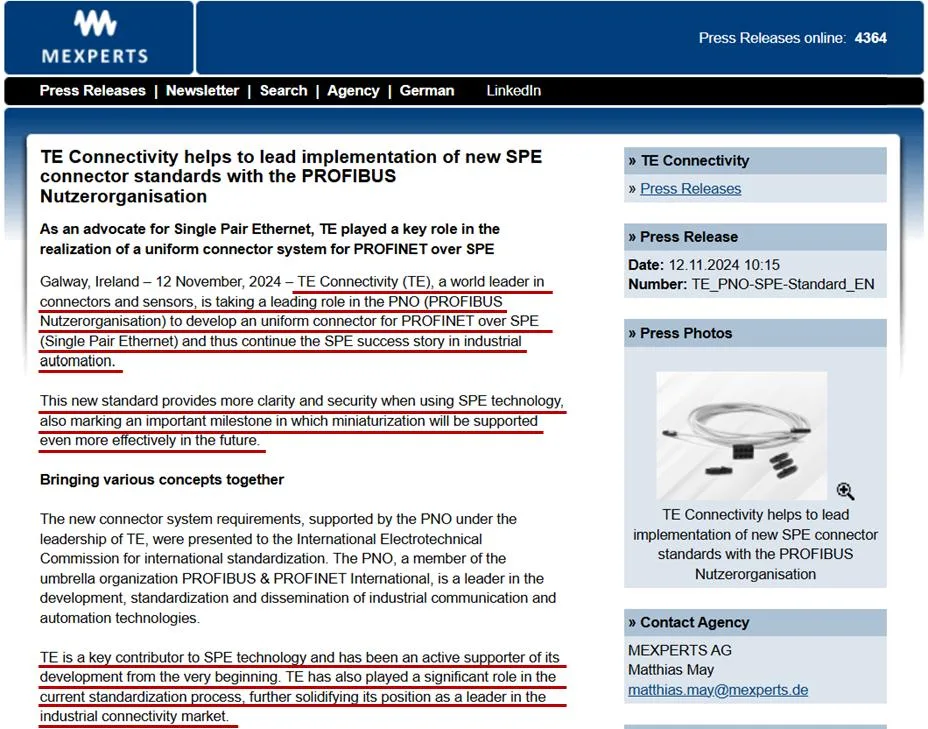
표준 선점 예시(2): ‘Spec-in 전략’을 통한 ‘Consensus’ 표준 선점두 번째는 'Consensus(합의) 표준'의 사례로, 자동차용 배터리 전원 및 신호 송수신용 커넥터 표준화에서의 TE의 'Spec-in' 접근법이다. TE Connectivity는 폭스바겐/아우디 그룹의 전기차 배터리 시스템에 TE NanoMQS와 BCON+ 커넥터가 채택되도
록 하는 데 성공했다. TE는 완성차 제조사(OEM)와 긴밀히 협력하여 배터리 시스템 설계 단계부터 자사 기술과 제품이 사양에 반영되도록 영향력을 행사했고, 1차공급업체(Tier 1)인 시스템 및 배터리 제조사와의 협력을 통해 제품을 개발했다.
그림 22. TE Connectivity의 VW / Audi社 배터리용 Connector 표준 선점 예시 (TE NanoMQS &
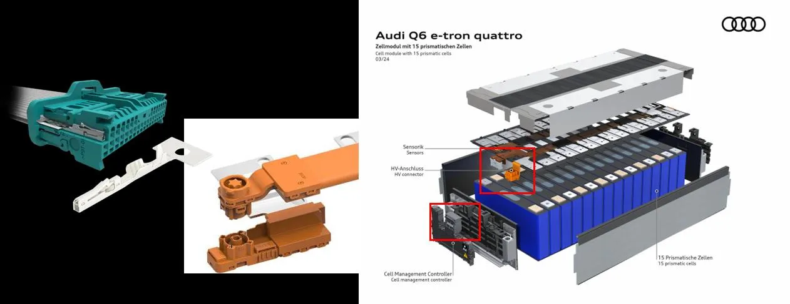
BCON+ Connector)
TE는 제품, 공정 혁신 역량, 특허 등 이미 확보한 경쟁력과 글로벌 생산 네트워크 등 보완적 자산을 기반으로 기술 사업화 초기 단계에서부터 표준화 프로세스에 적극 참여함으로써, 1st Tier 시스템/배터리 제조사 및 완성차를 상대로 협상력을 확보하고 단순 부품 공급자가 아닌 '솔루션 제공자'로서의 위치를 구축했다.
이러한 사례들은 TE Connectivity가 산업별 특성과 표준화 방식에 따라 차별화된접근법을 적용하면서도, 근본적으로는 특허를 기반한 기술 혁신, 표준 활동 참여, 선제적 제품화를 유기적으로 연계하는 일관된 전략적 방향성을 유지하고 있음을보여준다. TE의 이러한 표준화 전략은 다양한 산업 분야에서 장기적인 시장 리더십을 확보하는 핵심 요소로 작용하고 있다.
그림 23. ‘Spec-in 전략’을 통한 ‘Consensus’ 표준 선점
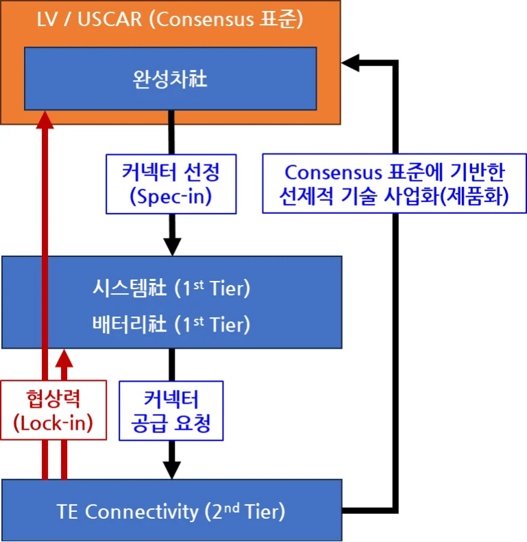
TE Connectivity의 표준화 전략과 활동을 종합해보면, 특허와 표준, 보완적 자산을전략적으로 결합하여 커넥터 산업에서 장기적 시장 지배력을 확보하는 전유성 확보 체계를 구축하고 있음을 알 수 있다. TE는 방대한 특허 포트폴리오를 기반으로기술적 우위를 확립하는 한편, 이를 다양한 산업 분야의 표준화 활동과 긴밀히연계함으로써 시장 리더십을 강화하고 있다.
특히 주목할 만한 점은 TE가 각 산업별 차별화된 표준화 전략 주도와 방대한 특허 포트폴리오를 기반으로 표준-제품화-수익창출의 선순환 구조를 완성했다는 것이다. 데이터/통신 분야에서는 de facto 표준 방식을, 자동차 분야에서는 Consensus 표준 방식을, 산업용 분야에서는 de jure 표준 방식을, 그리고 컴퓨터/가전 분야에서는 다시 de facto 표준 방식을 주로 활용하는 등 각 산업의 특성에 맞는 최적의표준화 접근법을 구사하고 있다.
또한 TE는 초기 표준화 단계부터 적극 참여하고 신규 표준을 선점함으로써 시장진입장벽을 구축하는 한편, Spec-in을 통한 표준 선점 및 협상력 확보로 지속가능한 경쟁우위를 유지하고 있다. 이러한 전략은 SPE(Single Pair Ethernet) 통신 커넥터
와 자동차용 배터리 커넥터 사례에서 확인할 수 있듯이, TE가 단순한 부품 공급자를 넘어 산업 생태계를 형성하고 주도하는 글로벌 리더로서의 위치를 공고히 하는 데 핵심적인 역할을 했다.
5.3 포지셔닝(Positioning): 차별화된 가치 제공과 전략적 위치 확보
TE Connectivity의 세 번째 핵심 성공 요인은 가치 사슬 내에서의 전략적 포지셔닝이다. 후지모토(Fujimoto, 2007)의 아키텍처 기반 비교우위(Architecture-Based Comparative Advantage) 이론에 따르면, "비즈니스가 성공하려면 '케이퍼빌리티 (Capability)'와 '포지셔닝(Positioning)'이란 두 가지를 갖춰야 한다." 특히 "조직 역량 (케이퍼빌리티)도 중요하지만 좋은 입지 또는 독점적 환경에 위치(포지셔닝)해야한다"는 원칙은 TE의 성공을 이해하는 핵심 관점이다.[15][18]
그림 24. 후지모토 교수의 조직능력, 경쟁력, 수익력의 다층구조[15][18]
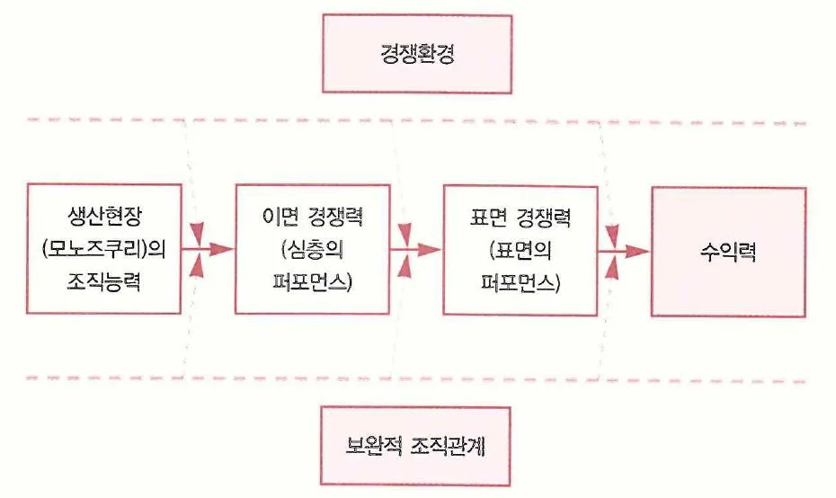
TE Connectivity의 성공에서 주목할 점은 범용 부품이라는 모듈화된 산업에서 포지셔닝 중심의 수익성 추구 전략을 효과적으로 구현했다는 것이다. 일반적으로 범용 부품 산업은 가격 경쟁이 치열하고 수익성 확보가 어려운 환경이지만, TE는 전략적 포지셔닝을 통해 이러한 한계를 극복하고 지속적인 고수익 구조를 유지해왔
다.
TE의 포지셔닝 전략은 “선택과 집중을 통한 우위 확보” ("Winning Globally with Pace in Focus Applications" & "Deliver Extraordinary Experience for Targeted Customers") 라는 전략적 방향성에 명확히 반영되어 있다. 특히 "Targeted Customers"에 대한 집중과 "Entitled Margin"의 추구는 TE가 단순한 규모의 경제나 생산 효율성을 넘어, 전략적 포지셔닝을 통한 수익성 극대화에 초점을 맞추고 있음을 보여준다.
그림 25. TE Connectivity의 주요 전략과 핵심 가치
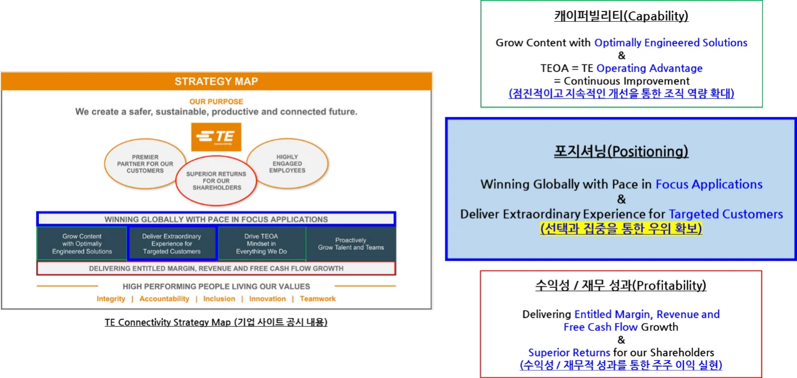
후지모토의 이론적 프레임워크에서 볼 때, TE는 생산 조직 역량보다는 수익성과직결되는 포지셔닝에 더 큰 비중을 두는 전략을 취하고 있다. 이는 미국 기업의전통적 강점인 포지셔닝 중심의 수익성 추구 모델을 효과적으로 구현한 사례로, 특히 아키텍처 위치 선정에 있어 구조의 인테그럴화(부품특화)전략 및 커스터마이즈 전략을 적극적으로 활용하여 고객 맞춤형 솔루션을 통한 차별화와 수익성 제고를 달성하고 있다.[15][18]
그림 26. Fujimoto 교수의 아키텍처 및 경쟁력 이론(Architecture-Based Comparative
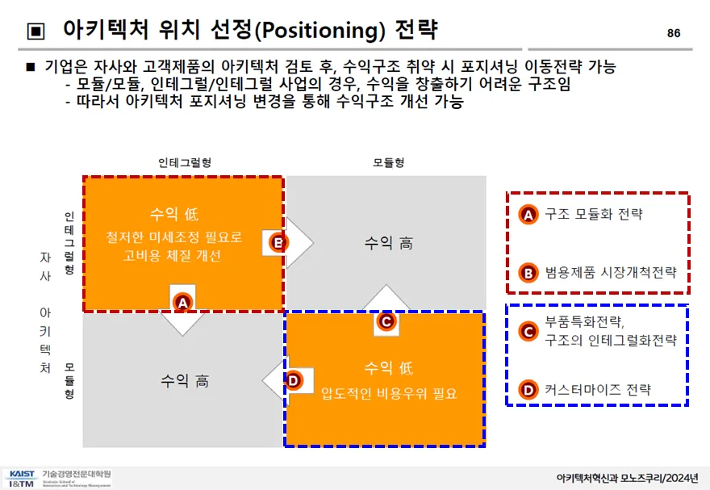
Advantage, 2007)기반 재구성[15][18]
그림 27. 생산현장의 조직능력과 전략 구상력의 왜곡현상[15][18]
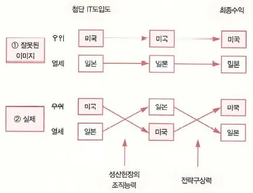
그림 28. Fujimoto 교수의 아키텍처 및 경쟁력 이론(Architecture-Based Comparative
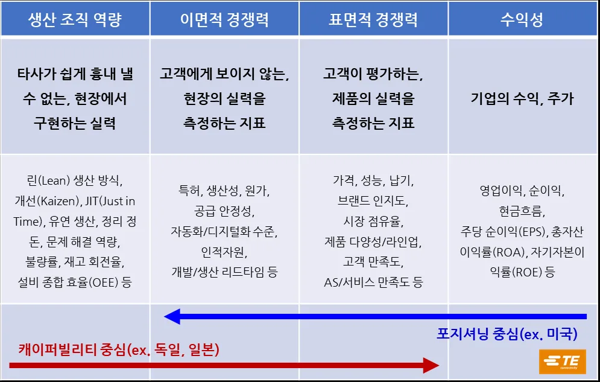
Advantage, 2007) 기반 재구성[15][18]
이러한 포지셔닝 중심의 전략은 TE가 범용 부품 산업에서 단순한 부품 공급자가아닌 '솔루션 제공자'로서의 위치를 확립하게 했으며, 이는 "Premier Partner for Our Customers"와 "Superior Returns for Our Shareholders"라는 두 가지 핵심 가치의 동시달성으로 이어졌다. 특히 "Delivering Entitled Margin, Revenue and Free Cash Flow Growth"라는 재무적 목표는 TE의 포지셔닝 전략이 궁극적으로 수익성 확보에 초점을 맞추고 있음을 명확히 보여준다.
이어지는 분석에서는 제품 유형별, 적용 방식별, 적용 분야별, 지역별 시장 및 기업별 점유율, 제품 포트폴리오 비중 등 구체적인 데이터와 함께, TE의 포지셔닝전략이 다양한 시장 세그먼트에서 어떻게 구현되었는지를 살펴보고, 이것이 어떻게 장기적인 시장 리더십과 수익성 확보로 이어졌는지를 분석하고자 한다.
5.3.1 제품 유형별 포지셔닝 전략 분석
TE Connectivity의 포지셔닝 전략을 제품 유형별로 분석하면 차별화된 전략적 패턴이 드러난다. Bishop & Associates의 World Connector Market Handbook 데이터에 따르
면, TE는 다양한 제품 카테고리에서 전략적 포지셔닝을 통해 시장 리더십을 구축하고 있다.
TE Connectivity는 시장 규모가 가장 큰 PCB(31.5%), I/O Rectangular(14.0%), Application Specific(18.7%) 영역에 자사 제품 포트폴리오를 전략적으로 집중(각각 40.3%, 19.1%, 18.7%)시켜 높은 시장 점유율을 확보하고 있다. 이러한 선택과 집중전략은 기술 집약적이고 고부가가치를 창출할 수 있는 핵심 제품군에서의 경쟁력을 강화하는 차별화된 포지셔닝을 보여준다. 주요 제품 유형별 TE의 시장 포지셔닝을 살펴보면 다음과 같다.[9][10][11]
1. PCB 커넥터: 세계 시장 규모 25,815.3백만 달러로 전체 커넥터 시장의 31.5% 를 차지하는 최대 시장이다. TE는 이 분야에서 40.3%의 자사 포트폴리오 집중
도와 19.9%의 시장 점유율로 1위를 차지하고 있다. PCB 커넥터는 주로 인테그
럴화된 Wire to Board, Board to Board 연결에 사용되는 제품으로, TE는 이 영역에서 고도의 기술력과 신뢰성을 기반으로 프리미엄 포지셔닝 전략을 구사하고
있다.
2. I/O Rectangular: 시장 규모 11,434.2백만 달러(14.0%)의 두 번째로 큰 시장에서 TE는 19.1%의 포트폴리오 집중도와 21.3%의 높은 시장 점유율로 역시 1위를
차지하고 있다. 이 제품군은 주로 컴퓨터, 통신 장비 등의 외부 연결에 사용되
는 커넥터로, 표준화 수준이 높은 영역이다. TE는 이 분야에서 표준 주도권과
기술 혁신을 통해 차별화된 가치를 제공하고 있다.
3. Application Specific: 시장 규모 15,271.6백만 달러(18.7%)의 세 번째로 큰 시장에서 TE는 18.7%의 포트폴리오 집중도와 20.1%의 시장 점유율로 1위를 차지
하고 있다. 특히 이 분야는 고객 맞춤형 솔루션이 요구되는 영역으로, TE의 커
스터마이즈 전략이 가장 효과적으로 구현되는 카테고리이다. Aptiv와 같은 전
문 경쟁사들도 이 분야에 집중하고 있으나, TE는 차별화된 기술력과 글로벌 생
산 역량을 기반으로 경쟁우위를 유지하고 있다.
표 12. 제품 유형별 포지셔닝 현황[9][10][11]
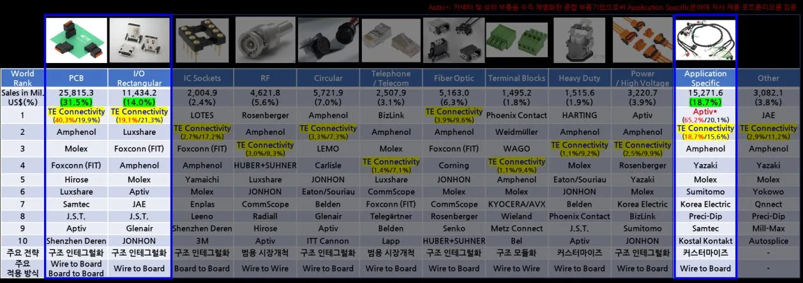
TE Connectivity의 제품 유형별 포지셔닝 전략에서 주목할 점은 '표준화 리더십 확립'이다. TE는 표준 선점을 기반으로 한 표준 커넥터 시장을 장악하는 한편, 구조인테그럴화(또는 모듈 통합) 전략과 커스터마이즈 전략을 통해 각 제품 유형별 시장에서도 리더십을 공고히 함으로써 안정적인 수익 구조와 지속적인 시장 지배력을 확보하고 있다.
이러한 제품 유형별 포지셔닝 분석은 TE가 후지모토의 아키텍처 이론에서 제시한 '좋은 위치' 선점 전략을 효과적으로 구현하고 있음을 보여준다. 특히 PCB, I/O Rectangular, Application Specific과 같은 핵심 시장에서의 압도적인 시장 점유율은 TE가 단순한 제조 역량을 넘어 전략적 포지셔닝을 통해 시장 구조 자체를 형성하고 있음을 시사한다. 이러한 제품 유형별 선택과 집중 전략은 TE가 범용 부품산업에서도 차별화된 가치를 창출하고 높은 수익성을 유지할 수 있는 근간이 되고 있다.
5.3.2 적용 방식별 포지셔닝 전략 분석
TE Connectivity의 포지셔닝 전략을 적용 방식(연결 유형)별로 분석하면 더욱 명확한 전략적 패턴이 드러난다. 커넥터 제품은 크게 Wire to Wire, Wire to Board, Board to Board 세 가지 적용 방식으로 구분할 수 있는데, TE는 각 카테고리별로 차별화된 전략적 접근을 통해 최적의 포지셔닝을 구축하고 있다.
TE Connectivity의 가장 주목할 만한 전략적 특징은 ‘기술 차별화 우위 전략’이다.
TE는 기술적 난이도가 높은 'Wire to Board' 분야에 집중함으로써, 단순 연결 목적의 'Wire to Wire' 제품보다 높은 부가가치와 진입장벽을 구축하여 장기적인 경쟁우위를 확보하고 있다.
표 13. 적용 방식별 포지셔닝 현황
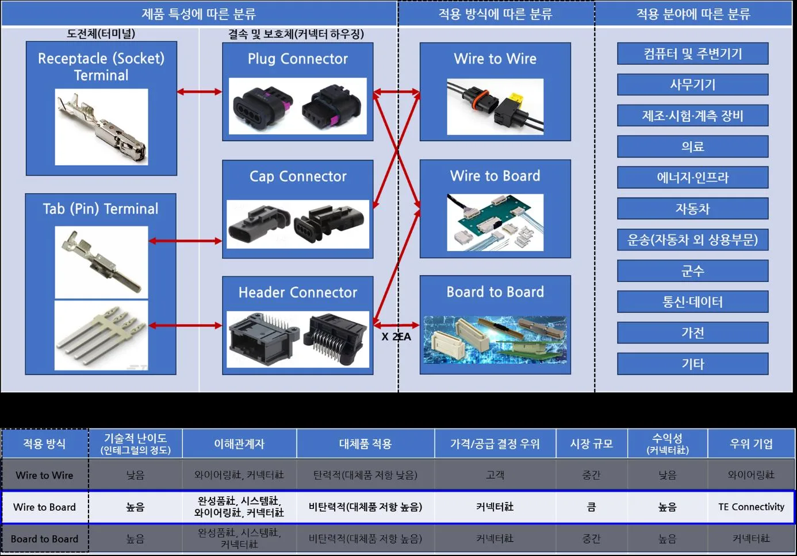
적용 방식 Wire to Wire Wire to Board Board to Board 기술적 난이도낮음 높음 높음
(인테그럴의 정도)
완성품社, 와이어링社, 시스템社, 완성품社,
이해관계자커넥터社 와이어링社, 시스템社, 커넥터社 커넥터社 탄력적(대체품 비탄력적(대체품 비탄력적(대체품
대체품 적용저항 낮음) 저항 높음) 저항 높음)
가격/공급 결정고객 커넥터社 커넥터社
우위
시장 규모 중간 큼 중간수익성낮음 높음 높음
(커넥터社)
우위 기업 와이어링社 TE Connectivity 커넥터社
표 14. 적용 방식별 특성
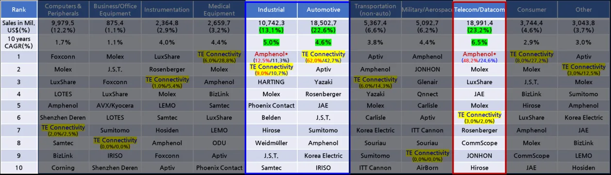
Wire to Board 연결 방식은 다양한 이해관계자 간 조정이 필요하고, 대체품에 대한저항이 높으며, 공급자 주도의 시장 특성을 보인다. 특히 PCB(31.5%), I/O Rectangular(14.0%) 등 대규모 시장과 연계되어 있어 수익성이 높고, TE Connectivity 가 확고한 시장 리더십을 보유하고 있다.[9][10][11]
TE는 제품 특성에 따른 분류에서 Receptacle(Socket) Terminal, Tab(Pin) Terminal과 같은 도전체(터미널)와 Plug Connector, Cap Connector, Header Connector와 같은 결속 및보호체(커넥터 하우징)를 결합하여 Wire to Board 연결 솔루션을 제공한다. 이 분야는 단순한 부품 제조를 넘어 설계 단계부터의 참여와 시스템 통합 능력이 요구되는 영역으로, TE는 이 분야에서의 기술적 리더십을 통해 차별화된 가치를 창출하고 있다.
전략적 시장 포지셔닝 측면에서 TE는 시장 규모가 크면서도 수익성이 높은 'Wire to Board' 영역에서의 주도권을 바탕으로, PCB, I/O Rectangular 등 주요 시장에서 관련 표준 수립에 적극 참여하고 고객별 맞춤형 솔루션을 제공하여 지속적인 시장지배력을 구축하고 있다.
반면, Wire to Wire 연결 방식은 기술적 진입장벽이 낮고 구매자 주도의 시장 특성을 보여 수익성이 상대적으로 낮다. TE는 이 분야에서는 선별적인 참여 전략을 취하며, 자사의 핵심 역량을 발휘할 수 있는 고부가가치 틈새시장에 집중하는 경향을 보인다.
Board to Board 연결 방식은 Wire to Board와 유사하게 기술적 난이도가 높고 수익성이 높은 특성을 보이나, 상대적으로 시장 규모가 작아 TE의 전략적 우선순위에서는 다소 낮은 위치를 차지하고 있다.
적용 방식별 포지셔닝 분석에서 특히 주목할 점은 TE가 자사의 경쟁우위를 최대한 발휘할 수 있는 'Wire to Board' 분야에 전략적으로 집중하고 있다는 것이다. 이는 후지모토의 아키텍처 이론에서 강조하는 '좋은 입지' 선점 전략의 전형적인 예로, TE는 기술적 난이도와 인터그럴 정도가 높은 영역에서 자사의 기술력과 역량을 최대한 발휘함으로써 진입장벽을 구축하고 지속가능한 수익 모델을 확립하고있다.
5.3.3 적용 분야별 포지셔닝 전략 분석
TE Connectivity의 포지셔닝 전략은 적용 분야별로 뚜렷한 차별화 패턴을 보인다. Bishop & Associates의 World Connector Market Handbook 데이터에 따르면, 글로벌 커넥터 시장에서 가장 큰 매출 비중을 차지하는 분야는 Telecom/Datacom(23.2%)과 Automotive(22.6%) 부문이다. 두 분야는 시장 규모가 크고 성장률도 높아(각각 6.5%, 4.6% CAGR) 경쟁이 치열한 영역이지만, TE는 부가가치가 높은 자동차 산업에 전략적으로 집중하는 독특한 포지셔닝을 보여주고 있다. [9][10][11]
TE Connectivity는 자동차 산업(22.6%)에서 자사 포트폴리오의 62.0%를 집중하고 42.7%의 시장 점유율로 1위를 차지하며 확고한 리더십을 보유하고 있다. 자동차산업은 고신뢰성과 안전성 요구로 인한 프리미엄 가격 책정이 가능하고, 자동차설계 단계부터 참여하여 장기 공급 계약을 확보할 수 있는 특성이 있다. 또한 전장화, 전동화 트렌드에 따른 지속적인 기술 혁신이 요구되며, 완성차 메이커 및 Tier 1 공급업체와의 긴밀한 협력 관계 구축이 가능한 분야이다. [9][10][11] 반면 경쟁사 Amphenol은 Telecom/Datacom 분야에 자사 포트폴리오의 48.2%를 집중하고 24.6%의 시장 점유율을 보이며, Military/Aerospace 분야에도 상당한 집중도를 보이는 차별화된 전략을 구사한다. 해당 분야는 기술 요구사항이 높고 표준화수준도 높은 특성을 지니고 있다. TE Connectivity의 주요 경쟁사인 Amphenol이 Telecom/Datacom과 Military/Aerospace 분야에 집중하는 것과 달리, TE는 자동차 (Automotive), 소비자 가전(Consumer), 의료장비(Medical Equipment) 등 최종 소비자와 밀접한 B2C 연관 산업에 집중하여 차별화된 시장 포지셔닝과 기술 경쟁력을구축하고 있다. [9][10][11]
표 15. 적용 분야별 포지셔닝 현황[9][10][11]
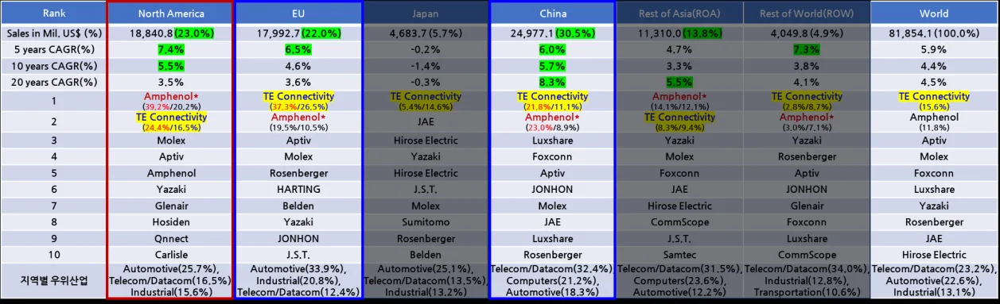
분야별 차별화 전략은 다음과 같은 전략적 의의를 갖는다. 첫째, 주요 경쟁사가강세를 보이는 분야를 피하고 자사의 강점을 발휘할 수 있는 분야에 집중함으로써 직접적인 경쟁을 최소화하는 경쟁 회피 전략이다. 둘째, 자동차, 의료장비 등고신뢰성과 안전성이 요구되는 분야에 집중하여 프리미엄 가격 책정과 높은 수익성을 확보하는 고부가가치 집중 전략이다. 셋째, 자동차 OEM, 의료장비 제조사등과의 장기적이고 안정적인 관계를 구축하여 지속적인 수익 창출 기반을 마련하는 고객 관계 기반 전략이다. 넷째, 전기차, 자율주행, 디지털 헬스케어 등 미래성장 가능성이 높은 분야의 핵심 공급자로 포지셔닝하여 장기적 성장 동력을 확보하는 전략이다.
TE Connectivity의 적용 분야별 포지셔닝 전략은 단순한 시장 점유율 확대를 넘어산업 생태계 내에서의 전략적 위치 선정을 통한 지속가능한 경쟁우위 확보를 목표로 하고 있다. 특히 고부가가치 B2C 연관 산업에 대한 집중은 TE가 단순한 부품 공급자가 아닌 핵심 솔루션 제공자로서의 위상을 강화하는 데 중요한 역할을하고 있다.
5.3.4 지역별 포지셔닝 전략 분석
TE Connectivity의 포지셔닝 전략은 지역별로도 명확한 차별화 패턴을 보인다. Bishop & Associates의 World Connector Market Handbook 데이터에 따르면, 글로벌 커넥터 시장은 중국(30.5%), 북미(23.0%), 유럽(22.0%), 아시아 기타 지역(13.8%), 일본(5.7%), 기타 지역(4.9%)으로 구성되어 있으며, TE는 각 지역별로 차별화된 전략
적 포지셔닝을 구축하고 있다. [9][10][11]
TE Connectivity는 시장 규모가 가장 큰 중국(30.5%), 북미(23.0%), 유럽(22.0%) 시장에서 모두 상위 1-2위를 차지하며, PCB, I/O Rectangular 등 주요 제품군과 Wire to Board 기술 중심의 포트폴리오를 각 지역의 주력 산업에 맞게 최적화하여 글로벌경기 변동에 강한 수익 구조를 확보하고 있다. [9][10][11]
중국 시장(30.5%)에서 TE는 자사 포트폴리오의 21.8%를 집중하고 11.1%의 시장점유율로 1위를 차지하고 있다. 중국 시장은 최근 5년간 6.0%, 10년간 5.2%, 20년간 8.3%의 높은 성장률을 보이는 핵심 성장 시장이다. 이 지역에서는 Telecom/Datacom(32.4%), Computers(21.2%), Automotive(18.3%) 순으로 산업 비중이높으며, TE는 중국 내 전기차, 5G, 산업 자동화 등 성장 분야에 대한 선제적 대응으로 경쟁우위를 확보하고 있다. [9][10][11]
유럽 시장(22.0%)에서 TE는 자사 포트폴리오의 21.3%를 집중하고 26.5%의 높은시장 점유율로 확고한 1위를 차지하고 있다. 유럽 시장은 5년간 6.5%, 10년간 4.6%, 20년간 3.6%의 성장률을 보이며, Automotive(33.9%), Industrial(20.8%), Telecom/Datacom(12.4%) 순으로 산업 비중이 높다. 특히 독일, 프랑스 등 자동차산업이 발달한 국가에서 TE는 프리미엄 브랜드 자동차 제조사들과의 전략적 파트너십을 통해 고부가가치 커넥터 솔루션을 공급하는 강점을 보이고 있다.
북미 시장(23.0%)에서는 Amphenol이 20.2%의 시장 점유율로 1위, TE가 16.5%로 2 위를 차지하고 있다. 북미 시장은 5년간 7.4%, 10년간 5.5%, 20년간 3.5%의 안정적성장세를 보이며, Automotive(25.7%), Telecom/Datacom(16.5%), Industrial(15.6%) 순으로 산업 비중이 높다. TE는 북미 지역에서 자동차 산업과의 긴밀한 협력을 바탕으로 하이엔드 솔루션에 집중하는 전략을 전개하고 있다. [9][10][11]
주요 경쟁사인 Amphenol과의 지역별 차별화 전략에서도 TE의 포지셔닝 특성이드러난다. Amphenol이 북미와 아시아 시장에서 통신/데이터 및 항공우주 부문으로강세를 보이는 반면, TE Connectivity는 유럽과 중국 시장에서 자동차, 산업기기 등고부가가치 B2C 연관 산업 중심으로 압도적 우위를 차지하고 있다. 특히 TE는 'Spec-in' 기반 표준 선점 전략을 통해 지역별 핵심 고객과의 협력 관계를 강화하며 시장 지배력을 확대하고 있다.
표 16. 지역별 포지셔닝 현황[9][10][11]
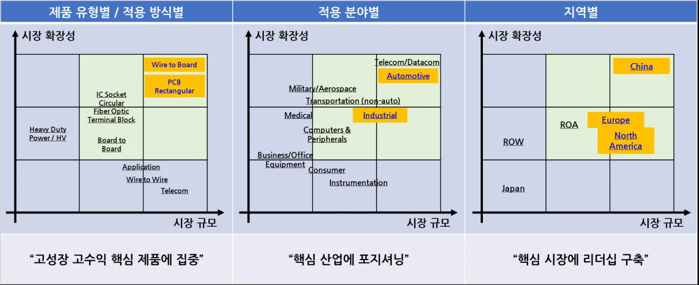
5.3.5 포지셔닝 종합
TE Connectivity의 지역별 포지셔닝 전략은 지역 다변화를 통한 리스크 분산, 지역별 산업 특성에 맞춘 최적화 전략, 글로벌 OEM 고객 대응력 강화, 지역별 성장기회 포착, 글로벌 통합과 지역 특화의 균형 유지 등을 통해 세계 시장에서의 경쟁력을 강화하는 데 중요한 역할을 하고 있다. 이는 후지모토의 아키텍처 이론에서 강조하는 '좋은 위치 선점'의 글로벌 차원의 구현으로 볼 수 있다.
표 17. TE Connectivity의 포지셔닝 현황 종합
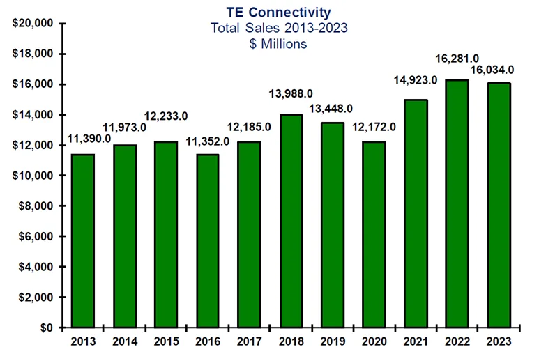
TE Connectivity의 이러한 통합적 포지셔닝 전략은 후지모토의 아키텍처 이론에서강조하는 '좋은 위치 선점'의 중요성을 실증적으로 보여준다. 단순히 뛰어난 기술
역량만으로는 지속가능한 경쟁우위를 확보하기 어려운 범용 부품 산업에서, TE는제품-분야-지역 차원의 포지셔닝 전략을 유기적으로 연계하여 시장 구조 자체를형성하고 통제하는 지배적 지위를 구축했다.
TE Connectivity의 차별화된 포지셔닝 전략은 특허와 표준이라는 전유성 체계 구축노력과 결합되어 더욱 강력한 시너지를 창출하고 있다. 이는 범용 부품 산업에서도 적절한 전략적 포지셔닝을 통해 높은 수익성과 지속가능한 경쟁우위를 동시에확보할 수 있음을 보여주는 모범적 사례로, 국내 소재·부품·장비 기업들에게 중요한 전략적 시사점을 제공한다.
6. 결론 및 시사점
6.1 경영 성과
TE Connectivity의 성공 요인으로 분석한 세 가지 핵심 전유성 체계(특허, 표준, 포지셔닝)는 실제 경영 성과로 이어져 지속가능한 경쟁우위를 입증하고 있다. 특허를 기반한 기술 혁신 역량 구축, 표준 활동 초기 단계부터 적극 참여와 기술 표준 선점, 그리고 제품 유형별, 적용 분야별, 지역별 차별화된 포지셔닝 전략을 통해 TE는 안정적인 매출 성장과 높은 수익성을 달성하고 있다. 이러한 전략적 접근이 실제 재무적 성과와 시장 지위에 어떻게 반영되었는지 살펴보는 것은 TE의전략 유효성을 검증하는 데 중요한 의미가 있다.
매출 성장과 수익성: TE Connectivity의 매출은 2013년 약 120억 달러(약 16.8조원, 달러당 1,400원 기준)에서 2023년 약 160억 달러(약 22.4조원)로 10년간 34% 성장했다. 이는 글로벌 경기 변동과 코로나19 팬데믹으로 인한 일시적 하락(2020년 약 121.7억 달러)에도 불구하고 장기적으로 안정적인 성장세를 유지한 결과이다. 특히 연평균 성장률(CAGR)은 약 2.8%로, 글로벌 경기 침체와 공급망 위기 등 불리한 외부 환경 속에서도 견고한 성장을 이어왔다.
그림 29. TE Connectivity社 매출 현황 (2013년 ~ )[9][10][11]
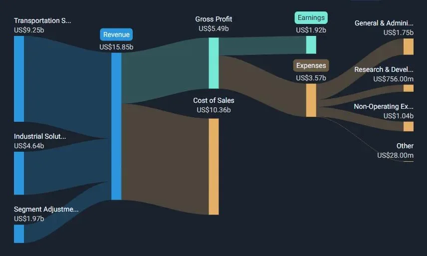
매출 대비 약 15%의 높은 영업이익률은 기술 산업 내에서도 상당히 우수한 수준으로, TE가 범용 부품 산업에서도 가격 결정력과 원가 효율성을 동시에 확보했음을 보여준다.[9][10][11]특히 주목할 점은 범용 부품이라는 일반적으로 저마진 사업으로 인식되는 영역에서도 고부가가치 제품 포트폴리오와 차별화된 시장 포지셔닝을 통해 이례적으로 높은 수익성을 달성하고 있다는 것이다.
그림 30. TE Connectivity FY23 Revenue & Expenses Breakdown[23]
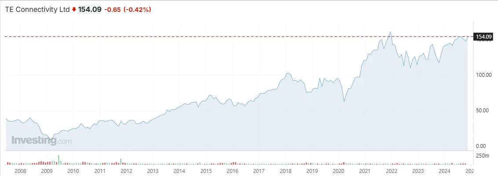
주가 역시 꾸준한 상승 트렌드를 보이며 2008년부터 현재까지 약 3배 이상 상승하는 등 주주가치 창출에 성공하고 있다. 배당금 지급과 자사주 매입을 통한 주주환원 정책 또한 적극적으로 실시하며 투자자들에게 안정적인 수익을 제공하고있다. 이러한 재무적 성과는 TE가 구축한 통합적 전유성 체계와 차별화된 포지셔닝 전략이 실질적인 경쟁우위로 이어지고 있음을 입증한다.
그림 31. TE Connectivity社 주가 그래프 (2008년 ~ )[8]
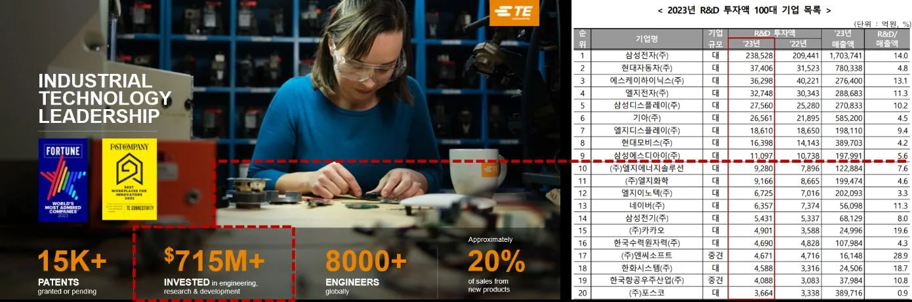
R&D 투자 및 미래 혁신 역량 구축: TE Connectivity는 2023년 기준 약 7.15억 달러(약 1조원)의 R&D 투자(매출액 대비 약 4.8%, 국내 기준 10위권 수준)를 지속하고 있다.[24] 이는 국내 대기업 평균 R&D 투자비율과 비슷한 수준으로, 범용부품 제조업체로서는 상당히 높은 수준의 연구개발 투자라고 할 수 있다. 이러한투자는 2023년 기준 약 15,000개 이상의 신규 등록 또는 출원 특허 포트폴리오와전 세계 8,000명 이상의 글로벌 엔지니어 네트워크 구축으로 이어졌다.
그림 32. 산업통상 자원부 - 「기업 연구개발(R&D) 스코어보드」 조사 결과[24]
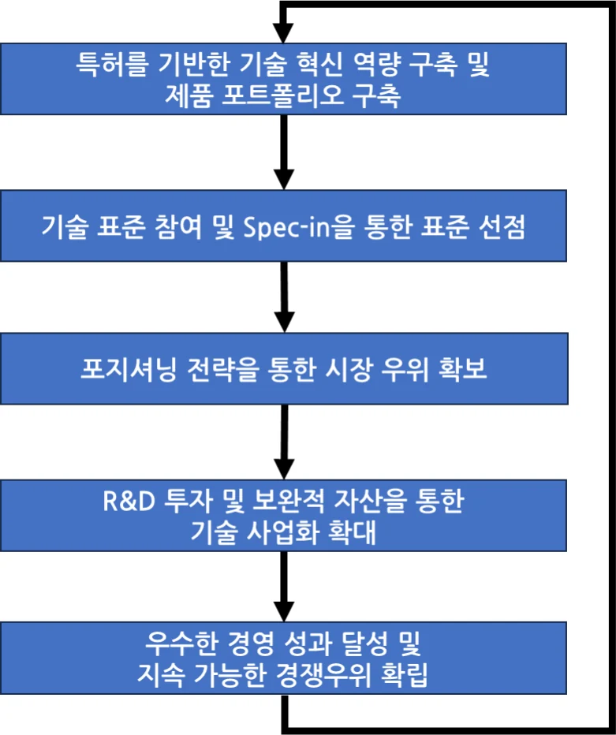
TE Connectivity의 R&D 투자는 단순한 양적 확대를 넘어 전략적 집중과 효율성향상을 중심으로 이루어지고 있다. 특히 미래 성장 동력인 전기차, 자율주행, 5G, 인공지능, 산업 자동화 등의 분야에 R&D 역량을 집중하여 기술 트렌드 변화에선제적으로 대응하고 있다. 또한 오픈 이노베이션 방식을 적극 활용하여 대학, 연구기관, 스타트업 등과의 협력을 통해 기술 혁신의 속도와 효율성을 높이고 있다.
TE의 기술 리더십은 Fortune지의 'World's Most Admired Companies'와 Clarivate의 'Top 100 Global Innovators'에 12년 연속 선정되는 등 외부적으로도 인정받고 있으며, 전체 매출의 약 20%를 신제품이 차지하여 R&D 투자의 효과적인 상업화가이루어지고 있음을 보여준다. 이는 기술 개발과 상업화의 선순환 구조가 효과적으로 작동하고 있음을 의미한다.
TE Connectivity의 연구개발 성과는 특히 고성능, 고신뢰성, 소형화, 경량화, 친환경등 미래 트렌드에 부합하는 혁신적 제품 개발로 이어지고 있다. 예를 들어, 전기
차용 고전압 커넥터, 자율주행용 센서 인터페이스, 초고속 데이터 전송용 커넥터등 고부가가치 제품의 개발과 상용화를 통해 제품 포트폴리오의 고도화를 지속적으로 추진하고 있다.
이러한 지속적인 R&D 투자와 기술 혁신은 앞서 살펴본 특허 기반 전유성 체계구축, 표준화 활동 주도, 전략적 포지셔닝과 유기적으로 연계되어 TE가 범용 부품 산업에서 장기적인 시장 지배력을 유지할 수 있는 근간이 되고 있다. 특히 경쟁사 대비 압도적인 기술적 우위와 지속적인 제품 차별화, 진입장벽 강화는 앞으로도 TE Connectivity의 지속가능한 성장을 뒷받침할 것으로 기대된다.
6.2 결론 및 시사점
본 연구는 글로벌 범용 부품(커넥터) 산업에서 수십 년간 시장 선도 지위를 유지해 온 TE Connectivity의 성공 요인을 전유성 체계(Appropriability Regime)와 포지셔닝 전략을 중심으로 분석하였다. 앞서 살펴본 경영 성과는 TE Connectivity의 전략이 실제로 지속가능한 경쟁우위와 경영 성과로 이어졌음을 보여준다. 이러한 분석을 바탕으로 연구 질문에 대한 결론과 시사점을 정리하면 다음과 같다.
RQ.1: "TE Connectivity는 고도의 경쟁시장인 범용 부품(커넥터) 산업에서 지난 수십년간 시장 선도 지위를 어떻게 유지할 수 있었는가?"
TE Connectivity는 시장 비중, 성장 잠재력, 수익성이 높은 영역에 집중하는 특허, 표준, 포지셔닝이라는 세 가지 핵심 요소가 유기적으로 결합된 통합적 전유성 체계를 구축함으로써 차별화된 경쟁력을 확보하였다.
첫째, 특허를 기반한 기술 혁신 역량 구축 및 제품 포트폴리오 구축으로 기술적우위를 확립하였다. TE는 방대한 특허 포트폴리오를 구축하여 핵심 기술 영역에서경쟁사 대비 3-4배 수준의 압도적인 기술적 우위를 확보했으며, 이를 통해 핵심기술에 대한 법적 보호와 진입장벽을 강화하였다.
둘째, 표준 활동 초기 단계부터 적극 참여하고 국제 표준화 활동을 주도하며 기술 표준 참여 및 Spec-in을 통한 표준 선점을 이루어내어 시장 우위를 확보하였다. TE는 각 산업별 표준화 특성에 맞게 de facto, Consensus, de jure 등 다양한 표준화 접근법을 전략적으로 활용하여 시장 구조 자체를 형성하는 주도권을 확보하였다.
셋째, 지속적인 R&D 투자와 글로벌 생산 네트워크 구축을 통한 R&D 투자 및 보완적 자산을 통한 기술 사업화 확대를 실현하였다. TE는 매출액의 약 4.8%에 달하는 R&D 투자를 지속하며, 기술 혁신과 상업화의 선순환 구조를 확립하였다.
이러한 전략적 접근은 안정적인 매출 성장과 높은 영업이익률을 달성하여 우수한경영 성과와 지속가능한 경쟁우위 확립으로 이어져, TE가 글로벌 커넥터 시장에서장기적인 리더십 위치를 공고히 유지할 수 있게 하였다.
RQ.2: "TE Connectivity의 성공사례가 제공하는 전략적 시사점은 무엇인가?" TE Connectivity의 성공 사례는 국내 소재·부품·장비 기업들에게 다음과 같은 전략적 시사점을 제공한다:
1. '선전구승(先戰求勝)' 보다는 '선승구전(先勝求戰)'의 전략적 접근이 필요.
국내 소부장 기업들은 주요국 대비 역량이 짧고, 후발주자로서 Fast Follower 전략을 취하고 있어 이미 공고한 포지셔닝을 유지하고 있는 글로벌 소부장 기업들과의 경쟁에서 우위를 확보하기 어려운 상황이다. 특히 표준 제정 참여 및 선점 역량이 비교적 약하고, 고객 중심의 폐쇄형/통합형 위주의 사업 대응으로 전유성 강화의 원천이 되는 수익성 확보에 한계를 보이고 있다.
이러한 상황을 극복하기 위해서는 단순히 시장에 뛰어들어 경쟁(先戰)하기보다, 먼저 승리할 수 있는 조건(先勝)을 갖추는 전략이 필요하다. 이를 위해 ① 핵심기술 영역에서의 R&D 집중 투자, ② 차별화된 제품 포트폴리오 구축, ③ 가치사슬 내 전략적 포지셔닝 강화 등을 통해 시장 진입 전부터 경쟁우위를 확보하는접근이 요구된다. TE Connectivity가 보여준 특허, 표준, 포지셔닝의 통합적 전략은이러한 '선승구전' 접근의 모범적 사례라 할 수 있다.
2. 커넥터 산업 내 경쟁 심화에 따른 전략적 대응이 필요.
산업 데이터에 따르면 상위 10개 기업의 시장 점유율은 2020년을 정점(약 60.8%) 으로 지속적으로 감소하고 있으며, 2023년에는 52.6%까지 하락했다. 시장은 계속확장되고 있으나, 그 빈공간을 신규 업체 또는 상위 Supply Chain(고객, 하위밸류체인 등 종합 부품 기업)이 채워나가는 추세다. 이는 커넥터 산업의 경쟁 구조가변화하고 있음을 시사하며, 국내 소부장 기업들은 이러한 변화에 대응하기 위한차별화 전략이 필요하다.
그림 33. Top 10 Share of World Market[6]
TE Connectivity가 제품 혁신, 표준 선점, 고부가가치 영역 집중을 통해 경쟁 환경변화에 효과적으로 대응한 사례는 중요한 참고점이 될 수 있다. 특히 핵심 기술영역에서의 R&D 집중 투자, 차별화된 제품 포트폴리오 구축, 가치사슬 내 전략적포지셔닝 강화 등을 통해 시장 진입 전부터 경쟁우위를 확보하는 접근이 필요하다.
결론적으로, TE Connectivity의 사례는 소재·부품·장비 산업과 같은 고도의 경쟁 시장에서 지속가능한 경쟁우위를 구축하기 위해서는 특허, 표준, 포지셔닝을 중심으로 한 통합적 전유성 체계 구축이 핵심임을 보여준다. 국내 소재·부품·장비 기업들이 글로벌 시장에서 경쟁력을 확보하기 위해서는 단순한 기술 개발을 넘어, TE Connectivity와 같은 선도 기업의 통합적 전유성 체계와 포지셔닝 전략을 벤치마킹하여 차별화된 경쟁우위를 구축할 필요가 있다.
6.3 한계점
본 연구의 한계점은 크게 연구 범위의 제한과 연구 방법론의 한계로 나눌 수 있
다.
연구 범위 측면에서, 본 사례연구는 전유성 체계의 핵심 요소(특허, 표준, 포지셔닝)에 중점을 둔 심층 분석을 통해 의미 있는 통찰을 제공하였으며, 향후 보완적성공 요인(글로벌 생산체계, M&A 전략, 마케팅 등)에 대한 추가 연구 기회가 존재한다.
연구 방법론 측면에서, 본 연구에서 등록 특허 수와 피인용 수를 혁신 역량 지표로 활용했으나, 이러한 양적 지표들은 특허의 질적 가치와 시장 성과와의 연계성을 완전히 반영하지 못하고, 기업 간 인용 전략 차이와 특허 소유권 변동을 고려하지 않는 한계가 있다.
또한 본 연구는 단일 기업 사례 연구로서 도출된 시사점이 다양한 규모와 역량을가진 소부장 기업들에게 동일하게 적용 가능한지에 대한 검증이 부족하다는 한계가 있다. 특히 중소기업과 스타트업 등 자원이 제한적인 기업들이 TE Connectivity 와 같은 대기업의 성공 전략을 어떻게 효과적으로 차별화하여 적용할 수 있을지에 대한 구체적인 방안을 제시하지 못하였다.
6.4 후속 연구 가능성
후속 연구 가능성은 크게 세 가지 방향으로 모색할 수 있다.
첫째, 경쟁 기업 연구 확장 측면에서, 글로벌(AMPHENOL), 국내(한국단자공업 /KET, 자동차 부품 중심) 경쟁 커넥터 전문기업의 성장 속도가 가파르며, 중국 제조업 시장을 위시한 중국 현지 기업(ex. Luxshare, Foxconn)의 급부상은 전통적 지위를 위협할 수 있는 주요 요인이므로, TE Connectivity를 비롯한 경쟁 커넥터 전문기업군에게 상당한 위협요소로 작용한다. 해당 기업에 대한 추가적인 사례연구도실무적인 유의미성이 있을 것으로 예상된다.
커넥터 전문기업 주요 경쟁사인 Amphenol의 전략과 시장안착에 유의미한 유사성, 연관성이 있을 것으로 추정되며, 이를 범용 부품 기업으로 확장 및 유형화하여유형 별 혁신의 특성 및 경영성과 간의 상관관계 연구의 가능성을 확인할 수 있다.
둘째, 미래 기술 환경에 대한 적응 연구로서, 디지털 전환과 커넥터 비즈니스 모델 진화에 관한 후속 연구가 필요하다. 무선 기술, 소프트웨어 정의 연결 (Software-Defined Connectivity) 등 기술 변화가 전통적 커넥터 비즈니스 모델을 어떻게 변화시키는지, 그리고 이러한 환경에서 전유성 체계가 어떻게 재구성되어야하는지에 대한 연구가 이루어질 필요가 있다.
셋째, 국내 소부장 기업 맞춤형 전략 연구를 통해, 국내 소부장 기업의 차별화된전유성 체계 구축 방안에 대한 실증적 연구가 후속으로 진행될 필요가 있다. 한국의 산업 및 정책 환경을 고려하여 국내 소부장 기업들이 글로벌 선도 기업들과차별화된 전유성 체계를 어떻게 구축할 수 있는지, 그리고 이를 통해 어떻게 글로벌 경쟁력을 확보할 수 있는지에 대한 구체적인 방안을 모색하는 연구가 요구된다.
Reference
[1] 현안과 과제 『한국의 소재∙부품∙장비 산업 현황과 주요 이슈』 - 현대 경제 연구원 – 2023.05 [2] 산업통상자원부 (2024). "소재부품장비 동향조사". 국가지표체계.
[3] 과학기술정책연구원 (2024). "STEPI Outlook 2024". 국가전략정보포털. [4] 국회예산정책처 (2022). "소재·부품·장비 산업 정책 분석". 국회예산정책처 보고서. [5] 산업연구원 (2024). "주요산업동향지표".
[6] TE Connectivity (2024). "TE Connectivity announces fourth quarter and fiscal 2024 results". [7] TE Connectivity - Annual Report [8] TE Connectivity(NYSE:TEL) Company & Stock information – Investing.com [9] Bishop & Associates, inc. – Connector Industry Yearbook – June 2024 [10] Bishop & Associates, inc. - Connector Industry Forecast – June 2024 [11] Bishop & Associates, inc. – Top 100 Connector Manufacturers – August 2024 [12] A dynamic model of process and product innovation - James M Utterback, William J Abernathy – 1975.12 [13] Sectoral patterns of technical change: Towards a taxonomy and a theory - Keith Pavitt - 1984.01 [14] Profiting from technological innovation: Implications for integration, collaboration, licensing and public policy Research policy, 15(6), 285 305 Teece, D.J .(1986) [15] Architecture-Based Comparative Advantage - A Design Information View of Manufacturing, Evolutionary and Institutional Economics Review, Springer - Takahiro FUJIMOTO. (2007) [16] Clarivate - Top 100 Global Innovator 2025 [17] AMP Electrical Products: Connectors, Cable Assemblies, Tooling, and More [18] 저서 ‘모노즈쿠리’ – 후지모토 교수(박정규 번역) – 2006.09 [19] USCAR/EWCAP - Sealed & Unsealed Connectors. [20] International Electrotechnical Commission(IEC) - IEC technical committees and subcommittees.
[21] PCI-SIG - Member Companies.
[22] TE Connectivity helps to lead implementation of new SPE connector standards with the PROFIBUS Nutzerorganisation.
[23] TE Connectivity FY23 Revenue & Expenses Breakdown [24] 산업통상 자원부 - 「 기업 연구개발(R&D) 스코어보드 」 조사 결과 발표 - 2024.06